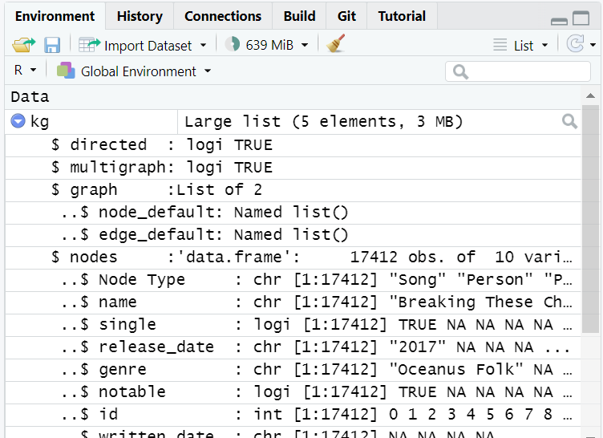
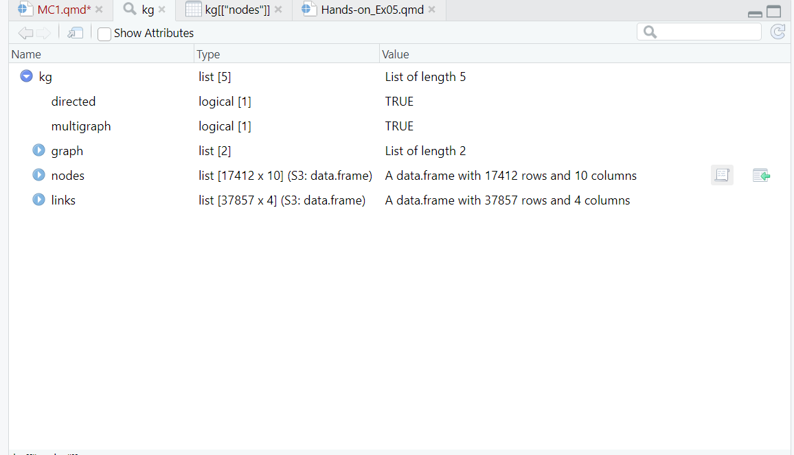
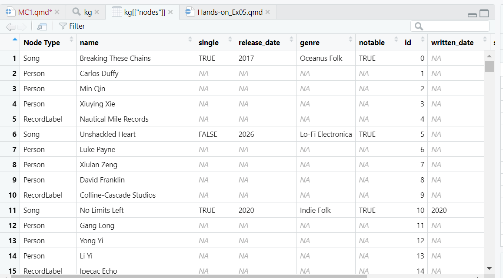
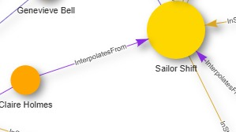

You are required to install the R packages above, if necessary, before continue to the next step
Check packages to ensure they are installed
Code
pacman::p_load(tidyverse, jsonlite, SmartEDA, tidygraph, ggraph)#tidygraph to build graph object, to work tgt with ggraph#ggplot no need to call out again as its in tidyverse#SmartEDA library for exploratory data analysis, good to have it to check data
Importing Knowledge Graph Data
Code
kg <-fromJSON("data/MC1_graph.json")
Inspect Structure
Code
str(kg,max.level =1)
List of 5
$ directed : logi TRUE
$ multigraph: logi TRUE
$ graph :List of 2
$ nodes :'data.frame': 17412 obs. of 10 variables:
$ links :'data.frame': 37857 obs. of 4 variables:
Code
#structure enable to check structure of the data#good to have this line to check structues of data
Note
directed - tells you if its a directed graph
nodes and links are in dataframe- can be read
Can see data types etc from Environment tab of R-studio - look at the structure

Can open and see the data table


Extract and Inspect
Code
nodes_tbl <-as_tibble(kg$nodes) #kg$ know that pull nodes outedges_tbl <-as_tibble(kg$links)
avoid multiple id that have 0 0 but actually they have missing value
to make sure they have unique id code
To reassign ID
depends on scenario, may need to subset data first before extracting - depends on use case
Code
id_map <-tibble(id = nodes_tbl$id, index =seq_len(nrow(nodes_tbl)))
Step 2: Map source and target IDs to row indices
Code
edges_tbl <- edges_tbl %>%left_join(id_map,by =c("source"="id"))%>%rename(from =index) %>%left_join(id_map, by =c("target"="id"))%>%rename(to = index)## see data table original source is 0 now become from 1
graph <-tbl_graph(nodes = nodes_tbl,edges = edges_tbl,directed = kg$directed)#if its directed, true, if not false. BUt in this case there is data to show its directed = true so can reference the data from the data
Visualising the knowledge graph
Code
set.seed(1234)#once fix this, everytime run random is the same number
graph_memberof <- graph %>%activate(edges) %>%filter (`Edge Type`=="MemberOf")##filter off the edges but the nodes are still there, still a large set of data 17412 as the source
Step 2: Extract only connected nodes (ie used in these edges)
Code
##additional code to remove and only used connected nodes, those that are usefulused_nodes_indices <- graph_memberof %>%activate(edges)%>%as_tibble() %>%select(from, to) %>%unlist() %>%unique()
# --- 1. Load your JSON data ---# Assuming 'MC1_graph.json' is in your working directorykg <-fromJSON("data/MC1_graph.json")nodes_tbl <-as_tibble(kg$nodes)edges_tbl <-as_tibble(kg$links)
# --- Define ALL possible Edge Type Colors (Global and Consistent) ---all_edge_type_colors <-c("PerformerOf"="#FF5733","ComposerOf"="#33FF57","ProducerOf"="#3357FF","LyricistOf"="#FF33F5","RecordedBy"="#F5FF33","InterpolatesFrom"="#8A2BE2","InStyleOf"="#DAA520","LyricalReferenceTo"="#5F9EA0","CoverOf"="#DC143C","DirectlySamples"="#6A5ACD","DistributedBy"="#20B2AA","MemberOf"="#8B4513","default"="#CCCCCC"# Fallback color for any unlisted type)# --- Define ALL possible Node Type Colors (Global and Consistent) ---all_node_type_colors <-c("Song"="lightblue","Person"="orange","MusicalGroup"="#CF9FFF","RecordLabel"="lightgreen","default"="gray"# Fallback color for any unlisted type)
Select target node ID
Code
# --- Get target node ID ---sailor_node <- nodes_tbl %>%filter(name == target_name)if (nrow(sailor_node) ==0) stop(paste("No node named '", target_name, "' found.", sep=""))sailor_id <-as.character(sailor_node$id)
Preparing edges df for filtering and visnetwork
Code
# --- Prepare edges_igraph_df for filtering and visNetwork ---edges_igraph_df <- edges_tbl %>%select(source, target, `Edge Type`, key) %>%mutate(across(c(source, target), as.character)) %>%rename(from = source, to = target) # Rename to from/to for visNetwork
data preparation for visnetwork
Code
# --- Section 1: General Context Network (2-hop) ---# Build igraph for neighborhood calculationg <-graph_from_data_frame(edges_igraph_df, directed =FALSE)
Code
# Get N-hop neighborhood for general contextego_nodes_indices <-ego(graph = g, order = max_hops_for_context, nodes = sailor_id, mode ="all")[[1]]connected_ids_general <-names(ego_nodes_indices)
Code
# Filter nodes for the general context subgraphsub_nodes_general <- nodes_tbl %>%filter(as.character(id) %in% connected_ids_general) %>%mutate(id =as.character(id),label = name,stage_name_str =if_else(!is.na(stage_name), paste0("<b>Stage Name:</b> ", stage_name, "<br>"), ""),release_date_str =if_else(!is.na(release_date), paste0("<b>Release Date:</b> ", release_date, "<br>"), ""),# Include genre information for the tooltipgenre_str =if_else(!is.na(genre), paste0("<b>Genre:</b> ", genre, "<br>"), ""),notable_str =if_else(!is.na(notable), paste0("<b>Notable:</b> ", notable, "<br>"), ""),title =paste0("<b>Name:</b> ", name, "<br>","<b>Node Type:</b> ", `Node Type`, "<br>", genre_str, # Add genre to the tooltip stage_name_str, release_date_str, notable_str ),group =`Node Type`,# --- ADD THIS LINE TO CONTROL NODE SIZE ---size =ifelse(id == sailor_id, 50, 15) # Sailor Shift size 50, others 15 ) %>%select(-stage_name_str, -release_date_str, -genre_str, -notable_str)
Code
# Filter edges for the general context subgraph and add colorsub_edges_general <- edges_igraph_df %>%filter(from %in% sub_nodes_general$id & to %in% sub_nodes_general$id) %>%mutate(color = all_edge_type_colors[`Edge Type`])sub_edges_general$color[is.na(sub_edges_general$color)] <- all_edge_type_colors["default"]
Generating Visnetwork graph
Code
# Visualize General Context Networkgraph_general_context <-visNetwork(nodes = sub_nodes_general, edges = sub_edges_general,main =paste0("'", target_name, "' Network (", max_hops_for_context, "-hop Context)")) %>%visNodes(shape ="dot", size =15, label =~label, title =~title) %>%visEdges(arrows ="to",label =~`Edge Type`,font =list(size =10, align ="middle"),color =list(color =~color, highlight =~color) ) %>%visOptions(highlightNearest =TRUE, nodesIdSelection =list(enabled =TRUE, selected = sailor_id)) %>%# Define node groups and their colors explicitly (needed for visLegend)visGroups(groupname ="Song", color ="lightblue") %>%visGroups(groupname ="Person", color ="orange") %>%visGroups(groupname ="RecordLabel", color ="lightgreen") %>%# Separate legend for nodes (on the left)visLegend(main ="Node Types",useGroups =TRUE, # Show node groups in this legendposition ="left",width =0.15# Adjust width as needed ) %>%# Separate legend for edges (on the right)visLegend(main ="Edge Types",# Do not use useGroups or useEdges here as we are manually adding edgesaddEdges =data.frame(color =unname(all_edge_type_colors),label =names(all_edge_type_colors),font.align ="top"# Or "middle", "bottom" ),position ="right",width =0.15# Adjust width as needed ) %>%visIgraphLayout(layout ="layout_with_fr", randomSeed =42)%>%# Apply FR layoutvisOptions(selectedBy ="group", highlightNearest =TRUE, nodesIdSelection =TRUE)graph_general_context
2 hop showing interactions between musical grp and ppl to sailor shift
able to see that a cluster of them are linked to sailor shift - dive deeper in following graphs
Code
# library(dplyr)# library(jsonlite)# library(igraph)# library(visNetwork)# library(viridisLite) # For the viridis color palette, used for group_colors# # # --- 1. Load your JSON data ---# # Assuming 'MC1_graph.json' is in your working directory# kg <- fromJSON("data/MC1_graph.json")# nodes_tbl <- as_tibble(kg$nodes)# edges_tbl <- as_tibble(kg$links)# # # --- Configuration ---# target_name <- "Sailor Shift"# --- Define the specific edge types for this new visualization ---desired_edge_types_for_group_interactions <-c("InterpolatesFrom","DirectlySamples","InStyleOf","CoverOf","LyricalReferenceTo","MemberOf")# --- IMPORTANT: Strict Node ID Cleaning ---nodes_tbl_cleaned <- nodes_tbl %>%mutate(temp_numeric_id =as.numeric(as.character(id)) ) %>%filter(!is.na(temp_numeric_id)) %>%mutate(id =as.character(temp_numeric_id)) %>%select(-temp_numeric_id)# --- Get target node ID ---sailor_node <- nodes_tbl_cleaned %>%filter(name == target_name)if (nrow(sailor_node) ==0) stop(paste("No node named '", target_name, "' found in cleaned data.", sep=""))sailor_id <-as.character(sailor_node$id)# --- Prepare edges for igraph and visNetwork ---edges_df_processed <- edges_tbl %>%select(source, target, `Edge Type`, key) %>%filter(source %in% nodes_tbl_cleaned$id & target %in% nodes_tbl_cleaned$id) %>%mutate(across(c(source, target), as.character)) %>%rename(from = source, to = target)# --- Core Logic for the New Visualization ---# 1. Filter edges to only include the desired interaction typesrelevant_edges_for_group_interactions <- edges_df_processed %>%filter(`Edge Type`%in% desired_edge_types_for_group_interactions)# 2. Identify all nodes (including Sailor Shift) connected by these specific edge typesnodes_connected_by_specific_edges <-unique(c(relevant_edges_for_group_interactions$from, relevant_edges_for_group_interactions$to))# 3. Filter for 'MusicalGroup' and 'Person' nodes that are within this specific interaction context,# AND explicitly include 'Sailor Shift' node.target_group_node_ids <- nodes_tbl_cleaned %>%filter(id %in% nodes_connected_by_specific_edges) %>%filter(`Node Type`%in%c("MusicalGroup", "Person")) %>%pull(id)# Add sailor_id to the list of target group nodestarget_group_node_ids <-unique(c(target_group_node_ids, sailor_id))# 4. Prepare the final nodes for the visualization# This includes the identified 'MusicalGroup', 'Person', and 'Sailor Shift' nodesnodes_for_new_vis <- nodes_tbl_cleaned %>%filter(id %in% target_group_node_ids) %>%mutate(id =as.character(id),label = name,title =paste0("<b>Name:</b> ", name, "<br>","<b>Node Type:</b> ", `Node Type`, "<br>",if_else(!is.na(stage_name), paste0("<b>Stage Name:</b> ", stage_name, "<br>"), ""),if_else(!is.na(release_date), paste0("<b>Release Date:</b> ", release_date, "<br>"), ""),if_else(!is.na(genre), paste0("<b>Genre:</b> ", genre, "<br>"), ""),if_else(!is.na(notable), paste0("<b>Notable:</b> ", notable, "<br>"), "") ),group =`Node Type`, # Group by Node Type for coloring/legendsize =ifelse(id == sailor_id, 40, 20), # Make Sailor Shift node larger# First, get the base color from the global map based on Node Typebase_color = all_node_type_colors[`Node Type`],# Handle cases where Node Type might not be in the map (will result in NA)base_color =ifelse(is.na(base_color), all_node_type_colors["default"], base_color),# Then, apply the specific color for Sailor Shift, overriding the base colorcolor =ifelse(id == sailor_id, "gold", base_color) )# 5. Prepare the final edges for the visualizationedges_for_new_vis <- relevant_edges_for_group_interactions %>%filter(from %in% nodes_for_new_vis$id & to %in% nodes_for_new_vis$id) %>%mutate(label =`Edge Type`,title =`Edge Type`,arrows ="to",color = all_edge_type_colors[`Edge Type`] )# Ensure no NA colors if a type wasn't in `all_edge_type_colors`edges_for_new_vis$color[is.na(edges_for_new_vis$color)] <- all_edge_type_colors["default"]# --- IMPORTANT: Check if nodes or edges are empty before plotting ---if (nrow(nodes_for_new_vis) ==0) {message("No nodes found for the specified filters. Cannot create the network graph.")} elseif (nrow(edges_for_new_vis) ==0) {message("No edges found for the specified filters between the selected nodes. The network graph will be empty or show only isolated nodes.")} else {# --- Create the NEW visNetwork plot --- graph_group_interactions <-visNetwork(nodes = nodes_for_new_vis, edges = edges_for_new_vis,main =paste0("Interactions of '", target_name, "' with Musical Groups and Persons")) %>%visNodes(# UPDATED: Use the 'color' column for background colorcolor =list(background =~color,border ="black",highlight =list(background ="red", border ="darkred"),hover =list(background ="lightgray", border ="darkgray") ),shadow =TRUE,font =list(size =12),shape ="dot" ) %>%visEdges(color =list(color =~color, highlight =~color),smooth =TRUE,shadow =TRUE,font =list(size =10, align ="middle") ) %>%visOptions(highlightNearest =TRUE,nodesIdSelection =list(enabled =TRUE, selected = sailor_id),selectedBy ="group" ) %>%# Define node groups and their colors explicitly for the legend.# Note: Sailor Shift's explicit color will override its group color visually,# but it will still be part of its original 'Node Type' group in the dropdown/legend.# visGroups(groupname = "Person", color = "orange") %>%# visGroups(groupname = "MusicalGroup", color = "#CF9FFF") %>%# visGroups(groupname = "Song", color = "lightblue") %>%# Separate legend for nodes (on the left)visLegend(main ="Node Types",useGroups =TRUE,position ="left",width =0.15 ) %>%# Separate legend for edges (on the right)visLegend(main ="Edge Types",addEdges =data.frame(color = all_edge_type_colors[desired_edge_types_for_group_interactions],label = desired_edge_types_for_group_interactions,font.align ="top" ),position ="right",width =0.15 ) %>%visInteraction(navigationButtons =TRUE,keyboard =TRUE ) %>%visIgraphLayout(layout ="layout_with_fr", randomSeed =42)# Save the network as an HTML filevisSave(graph_group_interactions, file =paste0(target_name, "_group_interactions_with_sailor_shift_highlighted.html"))}# Display the network graph_group_interactions
2 hop graph limiting the edges
Code
# library(dplyr)# library(jsonlite)# library(igraph)# library(visNetwork)# library(viridisLite) # For the viridis color palette, used for group_colors# # # --- 1. Load your JSON data ---# # Assuming 'MC1_graph.json' is in your working directory# kg <- fromJSON("data/MC1_graph.json")# nodes_tbl <- as_tibble(kg$nodes)# edges_tbl <- as_tibble(kg$links)# # # --- Configuration ---# target_name <- "Sailor Shift"max_hops_for_context <-2# Define the maximum number of hops from Sailor Shift# --- Define the specific edge types for this new visualization ---desired_edge_types_for_group_interactions <-c("InterpolatesFrom","DirectlySamples","InStyleOf","CoverOf")# --- IMPORTANT: Strict Node ID Cleaning ---nodes_tbl_cleaned <- nodes_tbl %>%mutate(temp_numeric_id =as.numeric(as.character(id)) ) %>%filter(!is.na(temp_numeric_id)) %>%mutate(id =as.character(temp_numeric_id)) %>%select(-temp_numeric_id)# --- Get target node ID ---sailor_node <- nodes_tbl_cleaned %>%filter(name == target_name)if (nrow(sailor_node) ==0) stop(paste("No node named '", target_name, "' found in cleaned data.", sep=""))sailor_id <-as.character(sailor_node$id)# --- Prepare edges for igraph and visNetwork ---edges_df_processed <- edges_tbl %>%select(source, target, `Edge Type`, key) %>%filter(source %in% nodes_tbl_cleaned$id & target %in% nodes_tbl_cleaned$id) %>%mutate(across(c(source, target), as.character)) %>%rename(from = source, to = target)# --- Build igraph from full edges_df_processed for neighborhood calculation ---g <-graph_from_data_frame(edges_df_processed, directed =FALSE) # Use directed = TRUE if your graph is truly directed for path finding# --- Core Logic for the New Visualization with Hop Limit ---# 1. Get nodes within N-hop neighborhood of Sailor Shiftego_nodes_indices <-ego(graph = g, order = max_hops_for_context, nodes = sailor_id, mode ="all")[[1]]connected_ids_within_hops <-names(ego_nodes_indices)# 2. Filter edges to be within this N-hop neighborhood AND also be one of the desired interaction typesrelevant_edges_for_display <- edges_df_processed %>%filter(from %in% connected_ids_within_hops & to %in% connected_ids_within_hops) %>%# Filter by hops firstfilter(`Edge Type`%in% desired_edge_types_for_group_interactions) # Then by specific edge types# 3. Identify all nodes involved in these filtered edgesnodes_involved_in_filtered_edges <-unique(c(relevant_edges_for_display$from, relevant_edges_for_display$to))# 4. Filter for ALL desired node types from the nodes involved in the filtered edges,# AND explicitly include 'Sailor Shift' node.target_nodes_for_vis <- nodes_tbl_cleaned %>%filter(id %in% nodes_involved_in_filtered_edges) %>%filter(`Node Type`%in%c("Person", "Song", "RecordLabel", "Album", "MusicalGroup")) %>%pull(id)# Add sailor_id to the list of target nodes for visualizationtarget_nodes_for_vis <-unique(c(target_nodes_for_vis, sailor_id))# 5. Prepare the final nodes for the visualizationnodes_for_new_vis <- nodes_tbl_cleaned %>%filter(id %in% target_nodes_for_vis) %>%mutate(id =as.character(id),label = name,title =paste0("<b>Name:</b> ", name, "<br>","<b>Node Type:</b> ", `Node Type`, "<br>",if_else(!is.na(stage_name), paste0("<b>Stage Name:</b> ", stage_name, "<br>"), ""),if_else(!is.na(release_date), paste0("<b>Release Date:</b> ", release_date, "<br>"), ""),if_else(!is.na(genre), paste0("<b>Genre:</b> ", genre, "<br>"), ""),if_else(!is.na(notable), paste0("<b>Notable:</b> ", notable, "<br>"), "") ),group =`Node Type`,size =ifelse(id == sailor_id, 30, 20),base_color = all_node_type_colors[`Node Type`],base_color =ifelse(is.na(base_color), all_node_type_colors["default"], base_color),color =ifelse(id == sailor_id, "gold", base_color) ) %>%select(-base_color)# For any node types not explicitly defined in all_node_type_colors, use the defaultnodes_for_new_vis$color[is.na(nodes_for_new_vis$color)] <- all_node_type_colors["default"]# 6. Prepare the final edges for the visualization# Filter the 'relevant_edges_for_display' further to ensure both ends are in 'nodes_for_new_vis'edges_for_new_vis <- relevant_edges_for_display %>%filter(from %in% nodes_for_new_vis$id & to %in% nodes_for_new_vis$id) %>%mutate(label =`Edge Type`,title =`Edge Type`,arrows ="to",color = all_edge_type_colors[`Edge Type`] )# Ensure no NA colors if a type wasn't in `all_edge_type_colors`edges_for_new_vis$color[is.na(edges_for_new_vis$color)] <- all_edge_type_colors["default"]# --- IMPORTANT: Check if nodes or edges are empty before plotting ---if (nrow(nodes_for_new_vis) ==0) {message("No nodes found for the specified filters and hop limit. Cannot create the network graph.")} elseif (nrow(edges_for_new_vis) ==0) {message("No edges found for the specified filters and hop limit between the selected nodes. The network graph will be empty or show only isolated nodes.")} else {# --- Create the NEW visNetwork plot --- graph_group_interactions <-visNetwork(nodes = nodes_for_new_vis, edges = edges_for_new_vis,main =paste0("Interactions of '", target_name, "' (", max_hops_for_context, "-hop relevant connections)")) %>%# Updated titlevisNodes(color =list(background =~color,border ="black",highlight =list(background ="red", border ="darkred"),hover =list(background ="lightgray", border ="darkgray") ),shadow =TRUE,font =list(size =12),shape ="dot" ) %>%visEdges(color =list(color =~color, highlight =~color),smooth =TRUE,shadow =TRUE,font =list(size =10, align ="middle") ) %>%visOptions(highlightNearest =TRUE,nodesIdSelection =list(enabled =TRUE, selected = sailor_id),selectedBy ="group" ) %>%# Define node groups and their colors explicitly for the legend using global mapvisGroups(groupname ="Person", color = all_node_type_colors["Person"]) %>%visGroups(groupname ="MusicalGroup", color = all_node_type_colors["MusicalGroup"]) %>%visGroups(groupname ="Song", color = all_node_type_colors["Song"]) %>%visGroups(groupname ="RecordLabel", color = all_node_type_colors["RecordLabel"]) %>%visGroups(groupname ="Album", color = all_node_type_colors["Album"]) %>%# Separate legend for nodes (on the left)visLegend(main ="Node Types",useGroups =TRUE,position ="left",width =0.15 ) %>%# Separate legend for edges (on the right)visLegend(main ="Edge Types",addEdges =data.frame(color = all_edge_type_colors[desired_edge_types_for_group_interactions],label = desired_edge_types_for_group_interactions,font.align ="top" ),position ="right",width =0.15 ) %>%visInteraction(navigationButtons =TRUE,keyboard =TRUE ) %>%visIgraphLayout(layout ="layout_with_fr", randomSeed =42) }# # Save the network as an HTML file# visSave(graph_group_interactions, file = paste0(target_name, "_interactions_", max_hops_for_context, "hop_related_types_highlighted.html")) # Updated filename# Display the network graph_group_interactions
another 2 hop graph reference
Code
# library(dplyr)# library(jsonlite)# library(igraph)# library(visNetwork)# library(viridisLite) # For the viridis color palette, used for group_colors# # # --- 1. Load your JSON data ---# # Assuming 'MC1_graph.json' is in your working directory# kg <- fromJSON("data/MC1_graph.json")# nodes_tbl <- as_tibble(kg$nodes)# edges_tbl <- as_tibble(kg$links)# # # --- Configuration ---# target_name <- "Sailor Shift"max_hops_for_context <-2# Define the maximum number of hops from Sailor Shift# --- Define the specific edge types for this new visualization ---# These are the edge types that will be colored specifically and listed in the legend.# If an edge type exists in the data but is NOT in this list, it will use 'default' color.desired_edge_types_for_group_interactions <-c("InterpolatesFrom","DirectlySamples","InStyleOf","CoverOf","PerformerOf","ComposerOf","ProducerOf","LyricistOf","RecordedBy","LyricalReferenceTo","DistributedBy","MemberOf") # Including all common types for the legend to be comprehensive# --- IMPORTANT: Strict Node ID Cleaning ---nodes_tbl_cleaned <- nodes_tbl %>%mutate(temp_numeric_id =as.numeric(as.character(id)) ) %>%filter(!is.na(temp_numeric_id)) %>%mutate(id =as.character(temp_numeric_id)) %>%select(-temp_numeric_id)# --- Get target node ID ---sailor_node <- nodes_tbl_cleaned %>%filter(name == target_name)if (nrow(sailor_node) ==0) stop(paste("No node named '", target_name, "' found in cleaned data.", sep=""))sailor_id <-as.character(sailor_node$id)# --- Prepare edges for igraph and visNetwork ---edges_df_processed <- edges_tbl %>%select(source, target, `Edge Type`, key) %>%filter(source %in% nodes_tbl_cleaned$id & target %in% nodes_tbl_cleaned$id) %>%mutate(across(c(source, target), as.character)) %>%rename(from = source, to = target)# --- Build igraph from full edges_df_processed for neighborhood calculation ---# Using directed = FALSE here unless your graph truly implies only one-way relationshipsg <-graph_from_data_frame(edges_df_processed, directed =FALSE)# --- Core Logic for the New Visualization with Hop Limit ---# 1. Get nodes within N-hop neighborhood of Sailor Shiftego_nodes_indices <-ego(graph = g, order = max_hops_for_context, nodes = sailor_id, mode ="all")[[1]]connected_ids_within_hops <-names(ego_nodes_indices)# 2. Filter ALL edges to be only within this N-hop neighborhood (no edge type filtering yet)relevant_edges_for_display <- edges_df_processed %>%filter(from %in% connected_ids_within_hops & to %in% connected_ids_within_hops)# 3. Identify all nodes involved in these filtered edgesnodes_involved_in_filtered_edges <-unique(c(relevant_edges_for_display$from, relevant_edges_for_display$to))# 4. Filter for ALL desired node types from the nodes involved in the filtered edges,# AND explicitly include 'Sailor Shift' node.target_nodes_for_vis <- nodes_tbl_cleaned %>%filter(id %in% nodes_involved_in_filtered_edges) %>%filter(`Node Type`%in%c("Person", "Song", "RecordLabel", "Album", "MusicalGroup")) %>%pull(id)# Add sailor_id to the list of target nodes for visualizationtarget_nodes_for_vis <-unique(c(target_nodes_for_vis, sailor_id))# 5. Prepare the final nodes for the visualizationnodes_for_new_vis <- nodes_tbl_cleaned %>%filter(id %in% target_nodes_for_vis) %>%mutate(id =as.character(id),label = name,title =paste0("<b>Name:</b> ", name, "<br>","<b>Node Type:</b> ", `Node Type`, "<br>",if_else(!is.na(stage_name), paste0("<b>Stage Name:</b> ", stage_name, "<br>"), ""),if_else(!is.na(release_date), paste0("<b>Release Date:</b> ", release_date, "<br>"), ""),if_else(!is.na(genre), paste0("<b>Genre:</b> ", genre, "<br>"), ""),if_else(!is.na(notable), paste0("<b>Notable:</b> ", notable, "<br>"), "") ),group =`Node Type`,size =ifelse(id == sailor_id, 40, 20),base_color = all_node_type_colors[`Node Type`],base_color =ifelse(is.na(base_color), all_node_type_colors["default"], base_color),color =ifelse(id == sailor_id, "gold", base_color) ) %>%select(-base_color)# For any node types not explicitly defined in all_node_type_colors, use the defaultnodes_for_new_vis$color[is.na(nodes_for_new_vis$color)] <- all_node_type_colors["default"]# 6. Prepare the final edges for the visualization# Filter the 'relevant_edges_for_display' further to ensure both ends are in 'nodes_for_new_vis'edges_for_new_vis <- relevant_edges_for_display %>%filter(from %in% nodes_for_new_vis$id & to %in% nodes_for_new_vis$id) %>%mutate(label =`Edge Type`,title =`Edge Type`,arrows ="to",color = all_edge_type_colors[`Edge Type`] # Still use global edge type map for colors )# Ensure no NA colors if a type wasn't in `all_edge_type_colors`edges_for_new_vis$color[is.na(edges_for_new_vis$color)] <- all_edge_type_colors["default"]# --- IMPORTANT: Check if nodes or edges are empty before plotting ---if (nrow(nodes_for_new_vis) ==0) {message("No nodes found for the specified filters and hop limit. Cannot create the network graph.")} elseif (nrow(edges_for_new_vis) ==0) {message("No edges found for the specified filters and hop limit between the selected nodes. The network graph will be empty or show only isolated nodes.")} else {# --- Create the NEW visNetwork plot --- graph_group_interactions <-visNetwork(nodes = nodes_for_new_vis, edges = edges_for_new_vis,main =paste0("Interactions of '", target_name, "' (", max_hops_for_context, "-hop All Relevant Connections)")) %>%# Updated titlevisNodes(color =list(background =~color,border ="black",highlight =list(background ="red", border ="darkred"),hover =list(background ="lightgray", border ="darkgray") ),shadow =TRUE,font =list(size =12),shape ="dot" ) %>%visEdges(color =list(color =~color, highlight =~color),smooth =TRUE,shadow =TRUE,font =list(size =10, align ="middle") ) %>%visOptions(highlightNearest =TRUE,nodesIdSelection =list(enabled =TRUE, selected = sailor_id),selectedBy ="group" ) %>%# Define node groups and their colors explicitly for the legend using global mapvisGroups(groupname ="Person", color = all_node_type_colors["Person"]) %>%visGroups(groupname ="MusicalGroup", color = all_node_type_colors["MusicalGroup"]) %>%visGroups(groupname ="Song", color = all_node_type_colors["Song"]) %>%visGroups(groupname ="RecordLabel", color = all_node_type_colors["RecordLabel"]) %>%visGroups(groupname ="Album", color = all_node_type_colors["Album"]) %>%# Separate legend for nodes (on the left)visLegend(main ="Node Types",useGroups =TRUE,position ="left",width =0.15 ) %>%# Separate legend for edges (on the right)visLegend(main ="Edge Types",# Create data for edge legend based on actual edge types present in the graphaddEdges =data.frame( edge_types_in_graph <-unique(edges_for_new_vis$`Edge Type`),color = all_edge_type_colors[edge_types_in_graph],label = edge_types_in_graph,font.align ="top" ),position ="right",width =0.15 ) %>%visInteraction(navigationButtons =TRUE,keyboard =TRUE ) %>%visIgraphLayout(layout ="layout_with_fr", randomSeed =42) }# # Save the network as an HTML file# visSave(graph_group_interactions, file = paste0(target_name, "_interactions_", max_hops_for_context, "hop_all_edge_types_highlighted.html")) # Updated filename# Display the network graph_group_interactions
Original 2 hop graph keep as reference - to show merging of edges for better display later on
Code
library(dplyr)library(jsonlite)library(igraph)library(visNetwork)library(viridisLite)library(stringr)# --- 1. Load your JSON data ---kg <-fromJSON("data/MC1_graph.json")nodes_tbl <-as_tibble(kg$nodes)edges_tbl <-as_tibble(kg$links)# --- Configuration ---target_name <-"Sailor Shift"max_hops_for_context <-2# Define the maximum number of hops from Sailor Shift for subgraph creation# --- Define Global Colors ---all_edge_type_colors <-c("PerformerOf"="#FF5733", "ComposerOf"="#33FF57", "ProducerOf"="#3357FF","LyricistOf"="#FF33F5", "RecordedBy"="#F5FF33", "InterpolatesFrom"="#8A2BE2","InStyleOf"="#DAA520", "LyricalReferenceTo"="#5F9EA0", "CoverOf"="#DC143C","DirectlySamples"="#6A5ACD", "DistributedBy"="#20B2AA", "MemberOf"="#8B4513","default"="#CCCCCC")all_node_type_colors <-c("Song"="lightblue", "Person"="orange", "MusicalGroup"="purple","RecordLabel"="lightgreen", "Album"="brown", "Oceanus Folk"="#FFD700","default_genre"="#7FFF00","default"="gray")# --- IMPORTANT: Strict Node ID Cleaning ---nodes_tbl_cleaned <- nodes_tbl %>%mutate(id =as.character(id),id =trimws(id),temp_numeric_id =as.numeric(id) ) %>%filter(!is.na(temp_numeric_id)) %>%mutate(id =as.character(temp_numeric_id)) %>%select(-temp_numeric_id) %>%distinct(id, .keep_all =TRUE) %>%mutate(igraph_vertex_id =1:n())# --- Get target node ID (using the cleaned data and its igraph_vertex_id) ---sailor_node <- nodes_tbl_cleaned %>%filter(name == target_name)if (nrow(sailor_node) ==0) {stop(paste("No node named '", target_name, "' found in cleaned data.", sep =""))}sailor_id <-as.character(sailor_node$id)sailor_igraph_id <-as.character(sailor_node$igraph_vertex_id)# --- Prepare edges for igraph (using igraph_vertex_id) ---valid_original_node_ids <- nodes_tbl_cleaned$idedges_df_processed <- edges_tbl %>%select(source, target, `Edge Type`, key) %>%filter(source %in% valid_original_node_ids & target %in% valid_original_node_ids) %>%mutate(source =as.character(source),target =as.character(target) ) %>%left_join(nodes_tbl_cleaned %>%select(id, igraph_vertex_id), by =c("source"="id")) %>%rename(from = igraph_vertex_id) %>%left_join(nodes_tbl_cleaned %>%select(id, igraph_vertex_id), by =c("target"="id")) %>%rename(to = igraph_vertex_id) %>%select(from, to, `Edge Type`, key) %>%filter(!is.na(from) &!is.na(to))# --- Build igraph from full edges_df_processed for neighborhood calculation ---g <-graph_from_data_frame(d = edges_df_processed %>%mutate(from =as.character(from), to =as.character(to)),directed =FALSE,vertices =as.character(nodes_tbl_cleaned$igraph_vertex_id))# --- Core Logic for the New Visualization with Hop Limit ---ego_nodes_indices <-ego(graph = g, order = max_hops_for_context, nodes = sailor_igraph_id, mode ="all")[[1]]connected_igraph_ids_within_hops <-names(ego_nodes_indices)relevant_edges_for_display <- edges_df_processed %>%filter(from %in% connected_igraph_ids_within_hops & to %in% connected_igraph_ids_within_hops)nodes_involved_in_filtered_edges_igraph_ids <-unique(c(relevant_edges_for_display$from, relevant_edges_for_display$to))target_nodes_for_vis_original_ids <- nodes_tbl_cleaned %>%filter(igraph_vertex_id %in% nodes_involved_in_filtered_edges_igraph_ids) %>%filter(`Node Type`%in%c("Person", "Song", "RecordLabel", "Album", "MusicalGroup")) %>%pull(id)target_nodes_for_vis_original_ids <-unique(c(target_nodes_for_vis_original_ids, sailor_id))# --- Helper function for safely adding details to node title ---get_html_detail <-function(data_row, col_name, display_label) {if (col_name %in%names(data_row) &&!is.na(data_row[[col_name]])) {return(paste0("<b>", display_label, ":</b> ", data_row[[col_name]], "<br>")) } else {return("") }}# --- Prepare the final nodes for the visualization ---nodes_for_new_vis <- nodes_tbl_cleaned %>%filter(id %in% target_nodes_for_vis_original_ids) %>%rowwise() %>%mutate(id =as.character(id),label = name,title =paste0("<b>Name:</b> ", name, "<br>","<b>Node Type:</b> ", `Node Type`, "<br>",get_html_detail(cur_data(), "Stage Name", "Stage Name"),get_html_detail(cur_data(), "Release Date", "Release Date"),get_html_detail(cur_data(), "genre", "Genre"),get_html_detail(cur_data(), "notable", "Notable") ),group =`Node Type`,size =ifelse(id == sailor_id, 40, 20),base_color = all_node_type_colors[`Node Type`],base_color =ifelse(is.na(base_color), all_node_type_colors["default"], base_color),color =ifelse(id == sailor_id, "gold", base_color) ) %>%ungroup() %>%select(-base_color)# --- Prepare the final edges for the visualization ---edges_for_new_vis <- edges_tbl %>%select(source, target, `Edge Type`, key) %>%rename(from = source, to = target) %>%filter(from %in% nodes_for_new_vis$id & to %in% nodes_for_new_vis$id) %>%mutate(from =as.character(from),to =as.character(to),label =`Edge Type`,title =`Edge Type`,arrows ="to",color = all_edge_type_colors[`Edge Type`],color =ifelse(is.na(color), all_edge_type_colors["default"], color) )# --- IMPORTANT: Check if nodes or edges are empty before plotting ---if (nrow(nodes_for_new_vis) ==0) {message("No nodes found for the specified filters and hop limit. Cannot create the network graph.")} elseif (nrow(edges_for_new_vis) ==0) {message("No edges found for the specified filters and hop limit between the selected nodes. The network graph will be empty or show only isolated nodes.")} else {# --- Create the NEW visNetwork plot --- graph_group_interactions <-visNetwork(nodes = nodes_for_new_vis, edges = edges_for_new_vis,main =paste0("Interactions of '", target_name, "' (", max_hops_for_context, "-hop Relevant Connections)")) %>%visNodes(color =list(background =~color,border ="black",highlight =list(background ="red", border ="darkred"),hover =list(background ="lightgray", border ="darkgray") ),shadow =TRUE,font =list(size =12),shape ="dot" ) %>%visEdges(color =list(color =~color, highlight =~color),smooth =TRUE,shadow =TRUE,font =list(size =10, align ="middle") ) %>%visOptions(# *** CHANGE HERE: Removed 'degree = 2' ***highlightNearest =list(enabled =TRUE, degree =1),nodesIdSelection =list(enabled =TRUE,selected = sailor_id),selectedBy ="group" )# Dynamically add visGroups for all unique node types present in the final graph unique_node_types_in_graph <-unique(nodes_for_new_vis$group)for (group_name in unique_node_types_in_graph) {if (group_name =="Sailor Shift"&& sailor_node$name[1] =="Sailor Shift") { graph_group_interactions <-visGroups(graph_group_interactions, groupname = group_name, color ="gold") } elseif (group_name %in%names(all_node_type_colors)) { graph_group_interactions <-visGroups(graph_group_interactions, groupname = group_name, color = all_node_type_colors[group_name]) } else { graph_group_interactions <-visGroups(graph_group_interactions, groupname = group_name, color = all_node_type_colors["default"]) } } graph_group_interactions <- graph_group_interactions %>%visLegend(main ="Node Types",useGroups =TRUE,position ="left",width =0.15 ) %>%visLegend(main ="Edge Types",addEdges =data.frame(edge_types_in_graph =unique(edges_for_new_vis$`Edge Type`),color = all_edge_type_colors[unique(edges_for_new_vis$`Edge Type`)],label =unique(edges_for_new_vis$`Edge Type`),font.align ="top" ),position ="right",width =0.15 ) %>%visInteraction(navigationButtons =TRUE,keyboard =TRUE ) %>%visIgraphLayout(layout ="layout_with_fr", randomSeed =42)# Display the network graph_group_interactions# Optional: Save the network as an HTML file# visSave(graph_group_interactions, file = paste0(target_name, "_interactions_", max_hops_for_context, "hop_all_edge_types_highlighted.html"))}
Aggregate edges to account for overlap - final over view graphs
2 hop interaction graph with aggregated edges
flatten the edges - issue of overlapping edges
Code
# Librarieslibrary(dplyr)library(jsonlite)library(igraph)library(visNetwork)library(viridisLite)library(stringr)# --- 1. Load your JSON data ---kg <-fromJSON("data/MC1_graph.json")nodes_tbl <-as_tibble(kg$nodes)edges_tbl <-as_tibble(kg$links)# --- Configuration ---target_name <-"Sailor Shift"max_hops_for_context <-2# Maximum number of hops for the subgraph# --- Define Global Colors for Node Types ---# IMPORTANT: Genres will NOT have individual colors here. All 'Song' nodes# will take the 'Song' color.# all_node_type_colors <- c(# "Song" = "lightblue",# "Person" = "orange",# "MusicalGroup" = "purple",# "RecordLabel" = "lightgreen",# "Album" = "brown",# # Add other Node Types if they exist in your data and you want specific colors# # E.g., if "Oceanus Folk" is a Node Type, not just a genre:# # "Oceanus Folk" = "#FFD700",# "default" = "gray" # Fallback for any unmapped Node Types# )# # # --- Define Global Colors for Edge Types ---# all_edge_type_colors <- c(# "PerformerOf" = "#FF5733", "ComposerOf" = "#33FF57", "ProducerOf" = "#3357FF",# "LyricistOf" = "#FF33F5", "RecordedBy" = "#F5FF33", "InterpolatesFrom" = "#8A2BE2",# "InStyleOf" = "#DAA520", "LyricalReferenceTo" = "#5F9EA0", "CoverOf" = "#DC143C",# "DirectlySamples" = "#6A5ACD", "DistributedBy" = "#20B2AA", "MemberOf" = "#8B4513",# "default" = "#CCCCCC" # Fallback for unlisted edge types# )# --- Define which edge types to display and include in the legend (for aggregation) ---desired_edge_types_to_display <-c("InterpolatesFrom","DirectlySamples","InStyleOf","CoverOf","LyricalReferenceTo","ProducerOf","ComposerOf","PerformerOf","LyricistOf","MemberOf")# --- Strict Node ID Cleaning ---nodes_tbl_cleaned <- nodes_tbl %>%mutate(temp_numeric_id =as.numeric(as.character(id)) ) %>%filter(!is.na(temp_numeric_id)) %>%mutate(id =as.character(temp_numeric_id)) %>%select(-temp_numeric_id) %>%distinct(id, .keep_all =TRUE)# --- Get target node ID from the cleaned nodes table ---sailor_node <- nodes_tbl_cleaned %>%filter(name == target_name)if (nrow(sailor_node) ==0) stop(paste("No node named '", target_name, "' found in cleaned data.", sep=""))sailor_id <-as.character(sailor_node$id)# --- Prepare edges for igraph (using original IDs) ---valid_original_node_ids <- nodes_tbl_cleaned$idedges_df_for_igraph <- edges_tbl %>%select(source, target, `Edge Type`, key) %>%filter(source %in% valid_original_node_ids & target %in% valid_original_node_ids) %>%mutate(across(c(source, target), as.character)) %>%rename(from = source, to = target)# --- Build full igraph with directed = TRUE ---g_full <-graph_from_data_frame(edges_df_for_igraph, directed =TRUE, vertices = nodes_tbl_cleaned$id)# --- Get N-hop neighborhood (2-hop overall context) ---ego_nodes_indices_overall <-ego(graph = g_full, order = max_hops_for_context, nodes = sailor_id, mode ="all")[[1]]connected_ids_overall <-names(ego_nodes_indices_overall)# --- Helper function for safely adding details to node title ---get_html_detail <-function(data_row, col_name, display_label) {if (col_name %in%names(data_row) &&!is.na(data_row[[col_name]])) {return(paste0("<b>", display_label, ":</b> ", data_row[[col_name]], "<br>")) } else {return("") }}# --- Prepare the final nodes for the visualization (Coloring by Node Type) ---nodes_for_combined_vis <- nodes_tbl_cleaned %>%filter(id %in% connected_ids_overall) %>%rowwise() %>%# Process row by row for dynamic title generationmutate(id =as.character(id),label = name,title =paste0("<b>Name:</b> ", name, "<br>","<b>Node Type:</b> ", `Node Type`, "<br>",get_html_detail(cur_data(), "Stage Name", "Stage Name"),get_html_detail(cur_data(), "Release Date", "Release Date"),get_html_detail(cur_data(), "genre", "Genre"), # Genre can still be in tooltipget_html_detail(cur_data(), "notable", "Notable") ),# Group nodes explicitly by Node Type for filtering and consistent coloringgroup =`Node Type`,size =ifelse(id == sailor_id, 50, 15), # Sailor Shift node larger# Determine node color based on 'Node Type' and Sailor Shift overridebase_color = all_node_type_colors[`Node Type`],node_display_color =ifelse(is.na(base_color), all_node_type_colors["default"], base_color),node_display_color =ifelse(id == sailor_id, "gold", node_display_color) # Sailor Shift is gold ) %>%ungroup() %>%select(-base_color)# --- Prepare Edges for visNetwork (AGGREGATED) ---sub_edges_combined <- edges_df_for_igraph %>%filter(from %in% nodes_for_combined_vis$id & to %in% nodes_for_combined_vis$id) %>%filter(`Edge Type`%in% desired_edge_types_to_display) %>%# --- AGGREGATE EDGES HERE ---group_by(from, to) %>%summarise(aggregated_label =paste(sort(unique(`Edge Type`)), collapse =", "),color = all_edge_type_colors[first(`Edge Type`)], # Color based on the first edge typearrows ="to",.groups ='drop' ) %>%mutate(label = aggregated_label, # Use the combined label for displaytitle = aggregated_label # Use the combined label for hover tooltip ) %>%# Ensure no NA colors if a type wasn't in `all_edge_type_colors`mutate(color =ifelse(is.na(color), all_edge_type_colors["default"], color))# --- IMPORTANT: Check if nodes or edges are empty before plotting ---if (nrow(nodes_for_combined_vis) ==0) {message("No nodes found for the specified filters. Cannot create the network graph.")} elseif (nrow(sub_edges_combined) ==0) {message("No edges found for the specified filters between the selected nodes. The network graph will be empty or show only isolated nodes.")} else {# --- Create the visNetwork plot --- graph_combined_context <-visNetwork(nodes = nodes_for_combined_vis, edges = sub_edges_combined,main =paste0("'", target_name, "' Network (2-hop Context by Node Type, Aggregated Edge Types)")) %>%visNodes(color =list(background =~node_display_color, # Use the calculated display colorborder ="black",highlight =list(background ="red", border ="darkred"),hover =list(background ="lightgray", border ="darkgray") ),shadow =TRUE,font =list(size =12),shape ="dot" ) %>%visEdges(arrows ="to",label =~label, # Use the aggregated labelfont =list(size =10, align ="middle"),title =~title, # Use aggregated label for hovercolor =list(color =~color, highlight =~color),smooth =list(enabled =TRUE, type ="continuous", roundness =0.5), # Static smoothingwidth =1 ) %>%visOptions(highlightNearest =TRUE,nodesIdSelection =list(enabled =TRUE, selected = sailor_id, useLabels =TRUE),selectedBy ="group"# Now filters by Node Type (Song, Person, Album, etc.) ) %>%# # Define node groups and their colors explicitly for the legend (visGroups) based on Node Type# visGroups(groupname = "Song", color = all_node_type_colors["Song"]) %>%# visGroups(groupname = "Person", color = all_node_type_colors["Person"]) %>%# visGroups(groupname = "MusicalGroup", color = all_node_type_colors["MusicalGroup"]) %>%# visGroups(groupname = "RecordLabel", color = all_node_type_colors["RecordLabel"]) %>%# visGroups(groupname = "Album", color = all_node_type_colors["Album"]) %>%# Add any other Node Types from your data that you want in the legend# For any group not explicitly listed here, visNetwork might assign a default color in the legend# unless you add it here.visGroups(groupname ="default", color = all_node_type_colors["default"]) %>%# Ensure default color is in legend# Legend (on the left)visLegend(main ="Node Types", # Now clearly states "Node Types"useGroups =TRUE,position ="left",width =0.15 ) %>%# --- Edge Legend: Show original edge types, not aggregated labels ---visLegend(main ="Edge Types",addEdges =data.frame(color = all_edge_type_colors[desired_edge_types_to_display],label = desired_edge_types_to_display,font.align ="top" ),position ="right",width =0.15 ) %>%visInteraction(navigationButtons =TRUE,keyboard =TRUE ) %>%# Apply initial igraph layout (static)visIgraphLayout(layout ="layout_with_fr", randomSeed =1234) %>%# Explicitly disable physics to make the graph staticvisPhysics(enabled =FALSE)# Display the network graph_combined_context# Optional: Save the network as an HTML file# visSave(graph_combined_context, file = paste0(target_name, "_combined_nodetype_colors_", max_hops_for_context, "hop.html"))}
Outward link influence to
Code
# Librarieslibrary(dplyr)library(jsonlite)library(igraph)library(visNetwork)library(viridisLite) # For viridis palette (though not directly used, kept for consistency if planned)library(stringr)# --- 1. Load your JSON data ---# Assuming 'MC1_graph.json' is in your working directorykg <-fromJSON("data/MC1_graph.json")nodes_tbl <-as_tibble(kg$nodes)edges_tbl <-as_tibble(kg$links)# --- Global Colors (consistent with previous versions, necessary for this code) ---# all_edge_type_colors <- c(# "PerformerOf" = "#FF5733", "ComposerOf" = "#33FF57", "ProducerOf" = "#3357FF",# "LyricistOf" = "#FF33F5", "RecordedBy" = "#F5FF33", "InterpolatesFrom" = "#8A2BE2",# "InStyleOf" = "#DAA520", "LyricalReferenceTo" = "#5F9EA0", "CoverOf" = "#DC143C",# "DirectlySamples" = "#6A5ACD", "DistributedBy" = "#20B2AA", "MemberOf" = "#8B4513",# "default" = "#CCCCCC" # Fallback for unlisted edge types# )# all_node_type_colors <- c(# "Song" = "lightblue", "Person" = "orange", "MusicalGroup" = "purple",# "RecordLabel" = "lightgreen", "Album" = "brown", "Oceanus Folk" = "#FFD700",# "default_genre" = "#7FFF00", # Fallback for unlisted genres# "default" = "gray" # Fallback for unlisted node types# )# --- Configuration ---target_name <-"Sailor Shift"max_hops_for_context <-2# For 2-hop neighborhood# --- NEW: Define which edge types to display and include in the legend ---# Only these specific edge types will be considered for aggregationdesired_edge_types_to_display <-c("InterpolatesFrom","DirectlySamples","InStyleOf","CoverOf","LyricalReferenceTo","ProducerOf","ComposerOf","PerformerOf","LyricistOf","MemberOf")# --- IMPORTANT: Strict Node ID Cleaning ---nodes_tbl_cleaned <- nodes_tbl %>%mutate(temp_numeric_id =as.numeric(as.character(id)) ) %>%filter(!is.na(temp_numeric_id)) %>%mutate(id =as.character(temp_numeric_id)) %>%select(-temp_numeric_id) %>%distinct(id, .keep_all =TRUE) # Ensure unique IDs after cleaning# --- Get target node ID from the cleaned nodes table ---sailor_node <- nodes_tbl_cleaned %>%filter(name == target_name)if (nrow(sailor_node) ==0) stop(paste("No node named '", target_name, "' found in cleaned data.", sep=""))sailor_id <-as.character(sailor_node$id)# --- IMPORTANT: Pre-filter edges to ensure valid source/target IDs ---valid_node_ids <- nodes_tbl_cleaned$idedges_df_for_igraph <- edges_tbl %>%select(source, target, `Edge Type`, key) %>%filter(source %in% valid_node_ids & target %in% valid_node_ids) %>%mutate(across(c(source, target), as.character)) %>%rename(from = source, to = target)# --- Build full igraph from the pre-filtered edge list (using `graph_from_data_frame`) ---g_full <-graph_from_data_frame(edges_df_for_igraph, directed =TRUE, vertices = nodes_tbl_cleaned$id)# --- Get N-hop outward neighborhood (2-hop in this case) ---# Use mode = "out" to get nodes influenced by Sailor Shiftego_nodes_indices_out <-ego(graph = g_full, order = max_hops_for_context, nodes = sailor_id, mode ="out")[[1]]connected_ids_outward <-names(ego_nodes_indices_out)# --- Prepare Nodes for visNetwork (Outward) ---nodes_for_outward_visnetwork <- nodes_tbl_cleaned %>%filter(id %in% connected_ids_outward) %>%mutate(label = name,title =paste0("<b>Name:</b> ", name, "<br>","<b>Node Type:</b> ", `Node Type`, "<br>",if_else(`Node Type`=="Song"&!is.na(release_date), paste0("<b>Release Date:</b> ", release_date, "<br>"), ""),if_else(!is.na(genre), paste0("<b>Genre:</b> ", genre, "<br>"), ""),if_else(!is.na(stage_name), paste0("<b>Stage Name:</b> ", stage_name, "<br>"), ""),if_else(!is.na(notable), paste0("<b>Notable:</b> ", notable, "<br>"), "") ),group =if_else(`Node Type`=="Song"&!is.na(genre), genre, `Node Type`),size =ifelse(id == sailor_id, 50, 15) # Sailor Shift node size set to 50 ) %>%# Calculate node display color based on Node Type/Genre and Sailor Shift overridemutate(base_color_from_map = all_node_type_colors[group],node_display_color =case_when(!is.na(base_color_from_map) ~ base_color_from_map,`Node Type`=="Song"&!is.na(genre) ~ all_node_type_colors["default_genre"],TRUE~ all_node_type_colors["default"] ),node_display_color =ifelse(id == sailor_id, "gold", node_display_color) # Highlight Sailor Shift )# --- Prepare Edges for visNetwork (Outward & AGGREGATED) ---sub_edges_outward <- edges_df_for_igraph %>%filter(from %in% nodes_for_outward_visnetwork$id & to %in% nodes_for_outward_visnetwork$id) %>%filter(`Edge Type`%in% desired_edge_types_to_display) %>%# --- AGGREGATE EDGES HERE ---group_by(from, to) %>%summarise(# Concatenate all unique edge types into a single labelaggregated_label =paste(sort(unique(`Edge Type`)), collapse =", "),# For color, pick the color of the first edge type (you could define a custom rule)color = all_edge_type_colors[first(`Edge Type`)],arrows ="to",.groups ='drop' ) %>%mutate(label = aggregated_label, # Use the combined label for displaytitle = aggregated_label # Use the combined label for hover tooltip ) %>%# Ensure no NA colors if a type wasn't in `all_edge_type_colors`mutate(color =ifelse(is.na(color), all_edge_type_colors["default"], color))# --- IMPORTANT: Check if nodes or edges are empty before plotting ---if (nrow(nodes_for_outward_visnetwork) ==0) {message("No nodes found for the specified filters. Cannot create the network graph.")} elseif (nrow(sub_edges_outward) ==0) {message("No edges found for the specified filters between the selected nodes. The network graph will be empty or show only isolated nodes.")} else {# --- Create the visNetwork plot --- graph_outward_context <-visNetwork(nodes = nodes_for_outward_visnetwork, edges = sub_edges_outward,main =paste0("Outward Links from '", target_name, "' (", max_hops_for_context, "-hop, Aggregated Edge Types)")) %>%visNodes(color =list(background =~node_display_color,border ="black",highlight =list(background ="red", border ="darkred"),hover =list(background ="lightgray", border ="darkgray") ),shadow =TRUE,font =list(size =12),shape ="dot" ) %>%visEdges(arrows ="to",label =~label, # Use the aggregated labelfont =list(size =10, align ="middle"),title =~title, # Use aggregated label for hovercolor =list(color =~color, highlight =~color),smooth =list(enabled =TRUE, type ="continuous", roundness =0.5), # Static smoothingwidth =1 ) %>%visOptions(highlightNearest =TRUE, # No specific degree, as per referencenodesIdSelection =list(enabled =TRUE, selected = sailor_id, useLabels =TRUE),selectedBy ="group" ) %>%# Define node groups and their colors explicitly for the legend (visGroups)# visGroups(groupname = "Song", color = all_node_type_colors["Song"]) %>%# visGroups(groupname = "Person", color = all_node_type_colors["Person"]) %>%# visGroups(groupname = "RecordLabel", color = all_node_type_colors["RecordLabel"]) %>%# visGroups(groupname = "Album", color = all_node_type_colors["Album"]) %>%# visGroups(groupname = "MusicalGroup", color = all_node_type_colors["MusicalGroup"]) %>%# Add any other groups that might be generated from genres if desired, e.g.,# visGroups(groupname = "Oceanus Folk", color = all_node_type_colors["Oceanus Folk"]) %>%# Legend (on the left)visLegend(main ="Node Types & Genres",useGroups =TRUE,position ="left",width =0.15 ) %>%# --- Edge Legend: Show original edge types, not aggregated labels ---visLegend(main ="Edge Types",addEdges =data.frame(color = all_edge_type_colors[desired_edge_types_to_display],label = desired_edge_types_to_display,font.align ="top" ),position ="right",width =0.15 ) %>%visInteraction(navigationButtons =TRUE,keyboard =TRUE ) %>%# Apply initial igraph layout (static)visIgraphLayout(layout ="layout_with_fr", randomSeed =1234) %>%# Explicitly disable physics to make the graph staticvisPhysics(enabled =FALSE)# Display the network graph_outward_context# Optional: Save the network as an HTML file# visSave(graph_outward_context, file = paste0(target_name, "_outward_aggregated_", max_hops_for_context, "hop.html"))}
Inward link influenced by
Code
# Librarieslibrary(dplyr)library(jsonlite)library(igraph)library(visNetwork)library(viridisLite) # For viridis palette (though not directly used, kept for consistency if planned)library(stringr)# --- 1. Load your JSON data ---# Assuming 'MC1_graph.json' is in your working directorykg <-fromJSON("data/MC1_graph.json")nodes_tbl <-as_tibble(kg$nodes)edges_tbl <-as_tibble(kg$links)# all_node_type_colors <- c(# "Song" = "lightblue",# "Person" = "orange",# "MusicalGroup" = "purple",# "RecordLabel" = "lightgreen",# "Album" = "brown",# "Oceanus Folk" = "#FFD700",# "Rock" = "red", # <-- Add your discovered genres here# "Pop" = "pink", # <-- with distinct colors# "Hip Hop" = "green", # <--# "default_genre" = "#7FFF00",# "default" = "gray"# )# --- Configuration ---target_name <-"Sailor Shift"max_hops_for_context <-2# For 2-hop neighborhood# --- NEW: Define which edge types to display and include in the legend ---# Only these specific edge types will be considered for aggregationdesired_edge_types_to_display <-c("InterpolatesFrom","DirectlySamples","InStyleOf","CoverOf","LyricalReferenceTo","ProducerOf","ComposerOf","PerformerOf","LyricistOf","MemberOf")# --- IMPORTANT: Strict Node ID Cleaning ---nodes_tbl_cleaned <- nodes_tbl %>%mutate(temp_numeric_id =as.numeric(as.character(id)) ) %>%filter(!is.na(temp_numeric_id)) %>%mutate(id =as.character(temp_numeric_id)) %>%select(-temp_numeric_id) %>%distinct(id, .keep_all =TRUE) # Ensure unique IDs after cleaning# --- Get target node ID from the cleaned nodes table ---sailor_node <- nodes_tbl_cleaned %>%filter(name == target_name)if (nrow(sailor_node) ==0) stop(paste("No node named '", target_name, "' found in cleaned data.", sep=""))sailor_id <-as.character(sailor_node$id)# --- IMPORTANT: Pre-filter edges to ensure valid source/target IDs ---valid_node_ids <- nodes_tbl_cleaned$idedges_df_for_igraph <- edges_tbl %>%select(source, target, `Edge Type`, key) %>%filter(source %in% valid_node_ids & target %in% valid_node_ids) %>%mutate(across(c(source, target), as.character)) %>%rename(from = source, to = target)# --- Build full igraph from the pre-filtered edge list (using `graph_from_data_frame`) ---g_full <-graph_from_data_frame(edges_df_for_igraph, directed =TRUE, vertices = nodes_tbl_cleaned$id)# --- Get N-hop inward neighborhood (2-hop in this case) ---# Use mode = "in" to get nodes influencing Sailor Shiftego_nodes_indices_in <-ego(graph = g_full, order = max_hops_for_context, nodes = sailor_id, mode ="in")[[1]]connected_ids_inward <-names(ego_nodes_indices_in)# --- Prepare Nodes for visNetwork (Inward) ---nodes_for_inward_visnetwork <- nodes_tbl_cleaned %>%filter(id %in% connected_ids_inward) %>%mutate(label = name,title =paste0("<b>Name:</b> ", name, "<br>","<b>Node Type:</b> ", `Node Type`, "<br>",if_else(`Node Type`=="Song"&!is.na(release_date), paste0("<b>Release Date:</b> ", release_date, "<br>"), ""),if_else(!is.na(genre), paste0("<b>Genre:</b> ", genre, "<br>"), ""),if_else(!is.na(stage_name), paste0("<b>Stage Name:</b> ", stage_name, "<br>"), ""),if_else(!is.na(notable), paste0("<b>Notable:</b> ", notable, "<br>"), "") ),group =if_else(`Node Type`=="Song"&!is.na(genre), genre, `Node Type`),size =ifelse(id == sailor_id, 50, 15) # Sailor Shift node size set to 50 ) %>%# Calculate node display color based on Node Type/Genre and Sailor Shift overridemutate(base_color_from_map = all_node_type_colors[group],node_display_color =case_when(!is.na(base_color_from_map) ~ base_color_from_map,`Node Type`=="Song"&!is.na(genre) ~ all_node_type_colors["default_genre"],TRUE~ all_node_type_colors["default"] ),node_display_color =ifelse(id == sailor_id, "gold", node_display_color) # Highlight Sailor Shift )# --- Prepare Edges for visNetwork (Inward & AGGREGATED) ---sub_edges_inward <- edges_df_for_igraph %>%filter(from %in% nodes_for_inward_visnetwork$id & to %in% nodes_for_inward_visnetwork$id) %>%filter(`Edge Type`%in% desired_edge_types_to_display) %>%# --- AGGREGATE EDGES HERE ---group_by(from, to) %>%summarise(# Concatenate all unique edge types into a single labelaggregated_label =paste(sort(unique(`Edge Type`)), collapse =", "),# For color, pick the color of the first edge type (you could define a custom rule)color = all_edge_type_colors[first(`Edge Type`)],arrows ="to",.groups ='drop' ) %>%mutate(label = aggregated_label, # Use the combined label for displaytitle = aggregated_label # Use the combined label for hover tooltip ) %>%# Ensure no NA colors if a type wasn't in `all_edge_type_colors`mutate(color =ifelse(is.na(color), all_edge_type_colors["default"], color))# --- IMPORTANT: Check if nodes or edges are empty before plotting ---if (nrow(nodes_for_inward_visnetwork) ==0) {message("No nodes found for the specified filters. Cannot create the network graph.")} elseif (nrow(sub_edges_inward) ==0) {message("No edges found for the specified filters between the selected nodes. The network graph will be empty or show only isolated nodes.")} else {# --- Create the visNetwork plot --- graph_inward_context <-visNetwork(nodes = nodes_for_inward_visnetwork, edges = sub_edges_inward,main =paste0("Inward Links Towards '", target_name, "' (", max_hops_for_context, "-hop, Aggregated Edge Types)")) %>%visNodes(color =list(background =~node_display_color,border ="black",highlight =list(background ="red", border ="darkred"),hover =list(background ="lightgray", border ="darkgray") ),shadow =TRUE,font =list(size =12),shape ="dot" ) %>%visEdges(arrows ="to",label =~label, # Use the aggregated labelfont =list(size =10, align ="middle"),title =~title, # Use aggregated label for hovercolor =list(color =~color, highlight =~color),smooth =list(enabled =TRUE, type ="continuous", roundness =0.5), # Static smoothingwidth =1 ) %>%visOptions(highlightNearest =TRUE, # No specific degree, as per referencenodesIdSelection =list(enabled =TRUE, selected = sailor_id, useLabels =TRUE),selectedBy ="group" ) %>%# Define node groups and their colors explicitly for the legend (visGroups)# visGroups(groupname = "Song", color = all_node_type_colors["Song"]) %>%# visGroups(groupname = "Person", color = all_node_type_colors["Person"]) %>%# visGroups(groupname = "RecordLabel", color = all_node_type_colors["RecordLabel"]) %>%# visGroups(groupname = "Album", color = all_node_type_colors["Album"]) %>%# visGroups(groupname = "MusicalGroup", color = all_node_type_colors["MusicalGroup"]) %>%# Add any other groups that might be generated from genres if desired, e.g.,# visGroups(groupname = "Oceanus Folk", color = all_node_type_colors["Oceanus Folk"]) %>%# Legend (on the left)visLegend(main ="Node Types & Genres",useGroups =TRUE,position ="left",width =0.15 ) %>%# --- Edge Legend: Show original edge types, not aggregated labels ---visLegend(main ="Edge Types",addEdges =data.frame(color = all_edge_type_colors[desired_edge_types_to_display],label = desired_edge_types_to_display,font.align ="top" ),position ="right",width =0.15 ) %>%visInteraction(navigationButtons =TRUE,keyboard =TRUE ) %>%# Apply initial igraph layout (static)visIgraphLayout(layout ="layout_with_fr", randomSeed =1234) %>%# Explicitly disable physics to make the graph staticvisPhysics(enabled =FALSE)# Display the network graph_inward_context# Optional: Save the network as an HTML file# visSave(graph_inward_context, file = paste0(target_name, "_inward_aggregated_", max_hops_for_context, "hop.html"))}
Observation
Some links did not adhere to schema definition. linkage of interpolatesfrom between 2 person/musicalgroup instead of 2 songs/albums

Sailor Shift History
Get History from the known data - when she released songs, when she part of which group etc
Can see when she released songs and what these songs any linkage to other songs or people and influence - can determine who influence her most
from current graphs
lyricalreferenceto - drowned harbour
instyleof - the fittle & the fjord
directlysamples and has been a member of - Ivy Echos
when did she team up with or collaborate with or write songs for different persons or groups
History of collaboration and timestamp with those she has worked with
##Approach data cleaning show full chart of sailor shift
Source Code
---title: "MC1"date: "May 14, 2025"date-modified: "last-modified"author: "Ng Jin Yao"format: html: code-fold: true code-tools: trueeditor: visualexecute: eval: true echo: true warning: false freeze: true---::: callout-important## ImportantYou are required to install the R packages above, if necessary, before continue to the next step\Check packages to ensure they are installed:::```{r}pacman::p_load(tidyverse, jsonlite, SmartEDA, tidygraph, ggraph)#tidygraph to build graph object, to work tgt with ggraph#ggplot no need to call out again as its in tidyverse#SmartEDA library for exploratory data analysis, good to have it to check data```## Importing Knowledge Graph Data```{r}kg <-fromJSON("data/MC1_graph.json")```### Inspect Structure```{r}str(kg,max.level =1)#structure enable to check structure of the data#good to have this line to check structues of data```::: callout-notedirected - tells you if its a directed graphnodes and links are in dataframe- can be readCan see data types etc from Environment tab of R-studio - look at the structureCan open and see the data table:::### Extract and Inspect```{r}nodes_tbl <-as_tibble(kg$nodes) #kg$ know that pull nodes outedges_tbl <-as_tibble(kg$links)```## Initial EDA```{r}ggplot(data = edges_tbl,aes(y=`Edge Type`)) +geom_bar()##want to know how many classes available for edge type## field names always use ``, not ''``````{r}ggplot ```## Creating Knowledge GraphThis is### Step 1: Mappying from node id to row indexavoid multiple id that have 0 0 but actually they have missing valueto make sure they have unique id codeTo reassign IDdepends on scenario, may need to subset data first before extracting - depends on use case```{r}id_map <-tibble(id = nodes_tbl$id, index =seq_len(nrow(nodes_tbl)))```### Step 2: Map source and target IDs to row indices```{r}edges_tbl <- edges_tbl %>%left_join(id_map,by =c("source"="id"))%>%rename(from =index) %>%left_join(id_map, by =c("target"="id"))%>%rename(to = index)## see data table original source is 0 now become from 1```### Step 3: Filter out any unmatched (invalid) edges```{r}edges_tbl <- edges_tbl %>%filter(!is.na(from), !is.na(to))```### Step 4: Creating the graph```{r}graph <-tbl_graph(nodes = nodes_tbl,edges = edges_tbl,directed = kg$directed)#if its directed, true, if not false. BUt in this case there is data to show its directed = true so can reference the data from the data```## Visualising the knowledge graph```{r}set.seed(1234)#once fix this, everytime run random is the same number```### Visualising the Whole Graph```{r}#| eval: falseggraph(graph, layout ="fr") +geom_edge_link(alpha =0.3,colour ="gray") +geom_node_point(aes(color =`Node Type`),size =4) +geom_node_text(aes(label = name),repel =TRUE,size =2.5) +theme_void()```#### Step 1:Filter edges to only "Memberof"mining for those "Memberof"```{r}graph_memberof <- graph %>%activate(edges) %>%filter (`Edge Type`=="MemberOf")##filter off the edges but the nodes are still there, still a large set of data 17412 as the source```#### Step 2: Extract only connected nodes (ie used in these edges)```{r}##additional code to remove and only used connected nodes, those that are usefulused_nodes_indices <- graph_memberof %>%activate(edges)%>%as_tibble() %>%select(from, to) %>%unlist() %>%unique()```#### Step 3: keep only those node```{r}graph_memberof <- graph_memberof %>%activate(nodes) %>%mutate(row_id =row_number()) %>%filter(row_id %in% used_nodes_indices) %>%select(-row_id) # optional cleanup```#### plot the sub graph```{r}ggraph(graph_memberof,layout ="fr") +geom_edge_link(alpha=0.5,colour ="gray") +geom_node_point(aes(color =`Node Type`),size =1)+geom_node_text(aes(label = name),repel =TRUE,size=2.5)theme_void()```## Visnetwork graphplotting a visnetwork graph to visualise the interactions centering around sailor shift### Step 1 :Load Libraries```{r}library(dplyr)library(igraph)library(visNetwork)library(jsonlite)```### Load Json Data```{r}# --- 1. Load your JSON data ---# Assuming 'MC1_graph.json' is in your working directorykg <-fromJSON("data/MC1_graph.json")nodes_tbl <-as_tibble(kg$nodes)edges_tbl <-as_tibble(kg$links)```### set filter and no. of hops```{r}# --- Configuration ---target_name <-"Sailor Shift"max_hops_for_context <-3```### Defining edge type colors```{r}# --- Define ALL possible Edge Type Colors (Global and Consistent) ---all_edge_type_colors <-c("PerformerOf"="#FF5733","ComposerOf"="#33FF57","ProducerOf"="#3357FF","LyricistOf"="#FF33F5","RecordedBy"="#F5FF33","InterpolatesFrom"="#8A2BE2","InStyleOf"="#DAA520","LyricalReferenceTo"="#5F9EA0","CoverOf"="#DC143C","DirectlySamples"="#6A5ACD","DistributedBy"="#20B2AA","MemberOf"="#8B4513","default"="#CCCCCC"# Fallback color for any unlisted type)# --- Define ALL possible Node Type Colors (Global and Consistent) ---all_node_type_colors <-c("Song"="lightblue","Person"="orange","MusicalGroup"="#CF9FFF","RecordLabel"="lightgreen","default"="gray"# Fallback color for any unlisted type)```### Select target node ID```{r}# --- Get target node ID ---sailor_node <- nodes_tbl %>%filter(name == target_name)if (nrow(sailor_node) ==0) stop(paste("No node named '", target_name, "' found.", sep=""))sailor_id <-as.character(sailor_node$id)```### Preparing edges df for filtering and visnetwork```{r}# --- Prepare edges_igraph_df for filtering and visNetwork ---edges_igraph_df <- edges_tbl %>%select(source, target, `Edge Type`, key) %>%mutate(across(c(source, target), as.character)) %>%rename(from = source, to = target) # Rename to from/to for visNetwork```### data preparation for visnetwork```{r}# --- Section 1: General Context Network (2-hop) ---# Build igraph for neighborhood calculationg <-graph_from_data_frame(edges_igraph_df, directed =FALSE)``````{r}# Get N-hop neighborhood for general contextego_nodes_indices <-ego(graph = g, order = max_hops_for_context, nodes = sailor_id, mode ="all")[[1]]connected_ids_general <-names(ego_nodes_indices)``````{r}# Filter nodes for the general context subgraphsub_nodes_general <- nodes_tbl %>%filter(as.character(id) %in% connected_ids_general) %>%mutate(id =as.character(id),label = name,stage_name_str =if_else(!is.na(stage_name), paste0("<b>Stage Name:</b> ", stage_name, "<br>"), ""),release_date_str =if_else(!is.na(release_date), paste0("<b>Release Date:</b> ", release_date, "<br>"), ""),# Include genre information for the tooltipgenre_str =if_else(!is.na(genre), paste0("<b>Genre:</b> ", genre, "<br>"), ""),notable_str =if_else(!is.na(notable), paste0("<b>Notable:</b> ", notable, "<br>"), ""),title =paste0("<b>Name:</b> ", name, "<br>","<b>Node Type:</b> ", `Node Type`, "<br>", genre_str, # Add genre to the tooltip stage_name_str, release_date_str, notable_str ),group =`Node Type`,# --- ADD THIS LINE TO CONTROL NODE SIZE ---size =ifelse(id == sailor_id, 50, 15) # Sailor Shift size 50, others 15 ) %>%select(-stage_name_str, -release_date_str, -genre_str, -notable_str)``````{r}# Filter edges for the general context subgraph and add colorsub_edges_general <- edges_igraph_df %>%filter(from %in% sub_nodes_general$id & to %in% sub_nodes_general$id) %>%mutate(color = all_edge_type_colors[`Edge Type`])sub_edges_general$color[is.na(sub_edges_general$color)] <- all_edge_type_colors["default"]```### Generating Visnetwork graph```{r}# Visualize General Context Networkgraph_general_context <-visNetwork(nodes = sub_nodes_general, edges = sub_edges_general,main =paste0("'", target_name, "' Network (", max_hops_for_context, "-hop Context)")) %>%visNodes(shape ="dot", size =15, label =~label, title =~title) %>%visEdges(arrows ="to",label =~`Edge Type`,font =list(size =10, align ="middle"),color =list(color =~color, highlight =~color) ) %>%visOptions(highlightNearest =TRUE, nodesIdSelection =list(enabled =TRUE, selected = sailor_id)) %>%# Define node groups and their colors explicitly (needed for visLegend)visGroups(groupname ="Song", color ="lightblue") %>%visGroups(groupname ="Person", color ="orange") %>%visGroups(groupname ="RecordLabel", color ="lightgreen") %>%# Separate legend for nodes (on the left)visLegend(main ="Node Types",useGroups =TRUE, # Show node groups in this legendposition ="left",width =0.15# Adjust width as needed ) %>%# Separate legend for edges (on the right)visLegend(main ="Edge Types",# Do not use useGroups or useEdges here as we are manually adding edgesaddEdges =data.frame(color =unname(all_edge_type_colors),label =names(all_edge_type_colors),font.align ="top"# Or "middle", "bottom" ),position ="right",width =0.15# Adjust width as needed ) %>%visIgraphLayout(layout ="layout_with_fr", randomSeed =42)%>%# Apply FR layoutvisOptions(selectedBy ="group", highlightNearest =TRUE, nodesIdSelection =TRUE)graph_general_context```### Optional - save as a html to view```{r}#| eval: falsevisSave(graph_general_context, file =paste0(target_name, "_general_network_", max_hops_for_context, "hop.html"))```## 2 hop showing interactions between musical grp and ppl to sailor shiftable to see that a cluster of them are linked to sailor shift - dive deeper in following graphs```{r}# library(dplyr)# library(jsonlite)# library(igraph)# library(visNetwork)# library(viridisLite) # For the viridis color palette, used for group_colors# # # --- 1. Load your JSON data ---# # Assuming 'MC1_graph.json' is in your working directory# kg <- fromJSON("data/MC1_graph.json")# nodes_tbl <- as_tibble(kg$nodes)# edges_tbl <- as_tibble(kg$links)# # # --- Configuration ---# target_name <- "Sailor Shift"# --- Define the specific edge types for this new visualization ---desired_edge_types_for_group_interactions <-c("InterpolatesFrom","DirectlySamples","InStyleOf","CoverOf","LyricalReferenceTo","MemberOf")# --- IMPORTANT: Strict Node ID Cleaning ---nodes_tbl_cleaned <- nodes_tbl %>%mutate(temp_numeric_id =as.numeric(as.character(id)) ) %>%filter(!is.na(temp_numeric_id)) %>%mutate(id =as.character(temp_numeric_id)) %>%select(-temp_numeric_id)# --- Get target node ID ---sailor_node <- nodes_tbl_cleaned %>%filter(name == target_name)if (nrow(sailor_node) ==0) stop(paste("No node named '", target_name, "' found in cleaned data.", sep=""))sailor_id <-as.character(sailor_node$id)# --- Prepare edges for igraph and visNetwork ---edges_df_processed <- edges_tbl %>%select(source, target, `Edge Type`, key) %>%filter(source %in% nodes_tbl_cleaned$id & target %in% nodes_tbl_cleaned$id) %>%mutate(across(c(source, target), as.character)) %>%rename(from = source, to = target)# --- Core Logic for the New Visualization ---# 1. Filter edges to only include the desired interaction typesrelevant_edges_for_group_interactions <- edges_df_processed %>%filter(`Edge Type`%in% desired_edge_types_for_group_interactions)# 2. Identify all nodes (including Sailor Shift) connected by these specific edge typesnodes_connected_by_specific_edges <-unique(c(relevant_edges_for_group_interactions$from, relevant_edges_for_group_interactions$to))# 3. Filter for 'MusicalGroup' and 'Person' nodes that are within this specific interaction context,# AND explicitly include 'Sailor Shift' node.target_group_node_ids <- nodes_tbl_cleaned %>%filter(id %in% nodes_connected_by_specific_edges) %>%filter(`Node Type`%in%c("MusicalGroup", "Person")) %>%pull(id)# Add sailor_id to the list of target group nodestarget_group_node_ids <-unique(c(target_group_node_ids, sailor_id))# 4. Prepare the final nodes for the visualization# This includes the identified 'MusicalGroup', 'Person', and 'Sailor Shift' nodesnodes_for_new_vis <- nodes_tbl_cleaned %>%filter(id %in% target_group_node_ids) %>%mutate(id =as.character(id),label = name,title =paste0("<b>Name:</b> ", name, "<br>","<b>Node Type:</b> ", `Node Type`, "<br>",if_else(!is.na(stage_name), paste0("<b>Stage Name:</b> ", stage_name, "<br>"), ""),if_else(!is.na(release_date), paste0("<b>Release Date:</b> ", release_date, "<br>"), ""),if_else(!is.na(genre), paste0("<b>Genre:</b> ", genre, "<br>"), ""),if_else(!is.na(notable), paste0("<b>Notable:</b> ", notable, "<br>"), "") ),group =`Node Type`, # Group by Node Type for coloring/legendsize =ifelse(id == sailor_id, 40, 20), # Make Sailor Shift node larger# First, get the base color from the global map based on Node Typebase_color = all_node_type_colors[`Node Type`],# Handle cases where Node Type might not be in the map (will result in NA)base_color =ifelse(is.na(base_color), all_node_type_colors["default"], base_color),# Then, apply the specific color for Sailor Shift, overriding the base colorcolor =ifelse(id == sailor_id, "gold", base_color) )# 5. Prepare the final edges for the visualizationedges_for_new_vis <- relevant_edges_for_group_interactions %>%filter(from %in% nodes_for_new_vis$id & to %in% nodes_for_new_vis$id) %>%mutate(label =`Edge Type`,title =`Edge Type`,arrows ="to",color = all_edge_type_colors[`Edge Type`] )# Ensure no NA colors if a type wasn't in `all_edge_type_colors`edges_for_new_vis$color[is.na(edges_for_new_vis$color)] <- all_edge_type_colors["default"]# --- IMPORTANT: Check if nodes or edges are empty before plotting ---if (nrow(nodes_for_new_vis) ==0) {message("No nodes found for the specified filters. Cannot create the network graph.")} elseif (nrow(edges_for_new_vis) ==0) {message("No edges found for the specified filters between the selected nodes. The network graph will be empty or show only isolated nodes.")} else {# --- Create the NEW visNetwork plot --- graph_group_interactions <-visNetwork(nodes = nodes_for_new_vis, edges = edges_for_new_vis,main =paste0("Interactions of '", target_name, "' with Musical Groups and Persons")) %>%visNodes(# UPDATED: Use the 'color' column for background colorcolor =list(background =~color,border ="black",highlight =list(background ="red", border ="darkred"),hover =list(background ="lightgray", border ="darkgray") ),shadow =TRUE,font =list(size =12),shape ="dot" ) %>%visEdges(color =list(color =~color, highlight =~color),smooth =TRUE,shadow =TRUE,font =list(size =10, align ="middle") ) %>%visOptions(highlightNearest =TRUE,nodesIdSelection =list(enabled =TRUE, selected = sailor_id),selectedBy ="group" ) %>%# Define node groups and their colors explicitly for the legend.# Note: Sailor Shift's explicit color will override its group color visually,# but it will still be part of its original 'Node Type' group in the dropdown/legend.# visGroups(groupname = "Person", color = "orange") %>%# visGroups(groupname = "MusicalGroup", color = "#CF9FFF") %>%# visGroups(groupname = "Song", color = "lightblue") %>%# Separate legend for nodes (on the left)visLegend(main ="Node Types",useGroups =TRUE,position ="left",width =0.15 ) %>%# Separate legend for edges (on the right)visLegend(main ="Edge Types",addEdges =data.frame(color = all_edge_type_colors[desired_edge_types_for_group_interactions],label = desired_edge_types_for_group_interactions,font.align ="top" ),position ="right",width =0.15 ) %>%visInteraction(navigationButtons =TRUE,keyboard =TRUE ) %>%visIgraphLayout(layout ="layout_with_fr", randomSeed =42)# Save the network as an HTML filevisSave(graph_group_interactions, file =paste0(target_name, "_group_interactions_with_sailor_shift_highlighted.html"))}# Display the network graph_group_interactions```## 2 hop graph limiting the edges```{r}# library(dplyr)# library(jsonlite)# library(igraph)# library(visNetwork)# library(viridisLite) # For the viridis color palette, used for group_colors# # # --- 1. Load your JSON data ---# # Assuming 'MC1_graph.json' is in your working directory# kg <- fromJSON("data/MC1_graph.json")# nodes_tbl <- as_tibble(kg$nodes)# edges_tbl <- as_tibble(kg$links)# # # --- Configuration ---# target_name <- "Sailor Shift"max_hops_for_context <-2# Define the maximum number of hops from Sailor Shift# --- Define the specific edge types for this new visualization ---desired_edge_types_for_group_interactions <-c("InterpolatesFrom","DirectlySamples","InStyleOf","CoverOf")# --- IMPORTANT: Strict Node ID Cleaning ---nodes_tbl_cleaned <- nodes_tbl %>%mutate(temp_numeric_id =as.numeric(as.character(id)) ) %>%filter(!is.na(temp_numeric_id)) %>%mutate(id =as.character(temp_numeric_id)) %>%select(-temp_numeric_id)# --- Get target node ID ---sailor_node <- nodes_tbl_cleaned %>%filter(name == target_name)if (nrow(sailor_node) ==0) stop(paste("No node named '", target_name, "' found in cleaned data.", sep=""))sailor_id <-as.character(sailor_node$id)# --- Prepare edges for igraph and visNetwork ---edges_df_processed <- edges_tbl %>%select(source, target, `Edge Type`, key) %>%filter(source %in% nodes_tbl_cleaned$id & target %in% nodes_tbl_cleaned$id) %>%mutate(across(c(source, target), as.character)) %>%rename(from = source, to = target)# --- Build igraph from full edges_df_processed for neighborhood calculation ---g <-graph_from_data_frame(edges_df_processed, directed =FALSE) # Use directed = TRUE if your graph is truly directed for path finding# --- Core Logic for the New Visualization with Hop Limit ---# 1. Get nodes within N-hop neighborhood of Sailor Shiftego_nodes_indices <-ego(graph = g, order = max_hops_for_context, nodes = sailor_id, mode ="all")[[1]]connected_ids_within_hops <-names(ego_nodes_indices)# 2. Filter edges to be within this N-hop neighborhood AND also be one of the desired interaction typesrelevant_edges_for_display <- edges_df_processed %>%filter(from %in% connected_ids_within_hops & to %in% connected_ids_within_hops) %>%# Filter by hops firstfilter(`Edge Type`%in% desired_edge_types_for_group_interactions) # Then by specific edge types# 3. Identify all nodes involved in these filtered edgesnodes_involved_in_filtered_edges <-unique(c(relevant_edges_for_display$from, relevant_edges_for_display$to))# 4. Filter for ALL desired node types from the nodes involved in the filtered edges,# AND explicitly include 'Sailor Shift' node.target_nodes_for_vis <- nodes_tbl_cleaned %>%filter(id %in% nodes_involved_in_filtered_edges) %>%filter(`Node Type`%in%c("Person", "Song", "RecordLabel", "Album", "MusicalGroup")) %>%pull(id)# Add sailor_id to the list of target nodes for visualizationtarget_nodes_for_vis <-unique(c(target_nodes_for_vis, sailor_id))# 5. Prepare the final nodes for the visualizationnodes_for_new_vis <- nodes_tbl_cleaned %>%filter(id %in% target_nodes_for_vis) %>%mutate(id =as.character(id),label = name,title =paste0("<b>Name:</b> ", name, "<br>","<b>Node Type:</b> ", `Node Type`, "<br>",if_else(!is.na(stage_name), paste0("<b>Stage Name:</b> ", stage_name, "<br>"), ""),if_else(!is.na(release_date), paste0("<b>Release Date:</b> ", release_date, "<br>"), ""),if_else(!is.na(genre), paste0("<b>Genre:</b> ", genre, "<br>"), ""),if_else(!is.na(notable), paste0("<b>Notable:</b> ", notable, "<br>"), "") ),group =`Node Type`,size =ifelse(id == sailor_id, 30, 20),base_color = all_node_type_colors[`Node Type`],base_color =ifelse(is.na(base_color), all_node_type_colors["default"], base_color),color =ifelse(id == sailor_id, "gold", base_color) ) %>%select(-base_color)# For any node types not explicitly defined in all_node_type_colors, use the defaultnodes_for_new_vis$color[is.na(nodes_for_new_vis$color)] <- all_node_type_colors["default"]# 6. Prepare the final edges for the visualization# Filter the 'relevant_edges_for_display' further to ensure both ends are in 'nodes_for_new_vis'edges_for_new_vis <- relevant_edges_for_display %>%filter(from %in% nodes_for_new_vis$id & to %in% nodes_for_new_vis$id) %>%mutate(label =`Edge Type`,title =`Edge Type`,arrows ="to",color = all_edge_type_colors[`Edge Type`] )# Ensure no NA colors if a type wasn't in `all_edge_type_colors`edges_for_new_vis$color[is.na(edges_for_new_vis$color)] <- all_edge_type_colors["default"]# --- IMPORTANT: Check if nodes or edges are empty before plotting ---if (nrow(nodes_for_new_vis) ==0) {message("No nodes found for the specified filters and hop limit. Cannot create the network graph.")} elseif (nrow(edges_for_new_vis) ==0) {message("No edges found for the specified filters and hop limit between the selected nodes. The network graph will be empty or show only isolated nodes.")} else {# --- Create the NEW visNetwork plot --- graph_group_interactions <-visNetwork(nodes = nodes_for_new_vis, edges = edges_for_new_vis,main =paste0("Interactions of '", target_name, "' (", max_hops_for_context, "-hop relevant connections)")) %>%# Updated titlevisNodes(color =list(background =~color,border ="black",highlight =list(background ="red", border ="darkred"),hover =list(background ="lightgray", border ="darkgray") ),shadow =TRUE,font =list(size =12),shape ="dot" ) %>%visEdges(color =list(color =~color, highlight =~color),smooth =TRUE,shadow =TRUE,font =list(size =10, align ="middle") ) %>%visOptions(highlightNearest =TRUE,nodesIdSelection =list(enabled =TRUE, selected = sailor_id),selectedBy ="group" ) %>%# Define node groups and their colors explicitly for the legend using global mapvisGroups(groupname ="Person", color = all_node_type_colors["Person"]) %>%visGroups(groupname ="MusicalGroup", color = all_node_type_colors["MusicalGroup"]) %>%visGroups(groupname ="Song", color = all_node_type_colors["Song"]) %>%visGroups(groupname ="RecordLabel", color = all_node_type_colors["RecordLabel"]) %>%visGroups(groupname ="Album", color = all_node_type_colors["Album"]) %>%# Separate legend for nodes (on the left)visLegend(main ="Node Types",useGroups =TRUE,position ="left",width =0.15 ) %>%# Separate legend for edges (on the right)visLegend(main ="Edge Types",addEdges =data.frame(color = all_edge_type_colors[desired_edge_types_for_group_interactions],label = desired_edge_types_for_group_interactions,font.align ="top" ),position ="right",width =0.15 ) %>%visInteraction(navigationButtons =TRUE,keyboard =TRUE ) %>%visIgraphLayout(layout ="layout_with_fr", randomSeed =42) }# # Save the network as an HTML file# visSave(graph_group_interactions, file = paste0(target_name, "_interactions_", max_hops_for_context, "hop_related_types_highlighted.html")) # Updated filename# Display the network graph_group_interactions```## another 2 hop graph reference```{r}# library(dplyr)# library(jsonlite)# library(igraph)# library(visNetwork)# library(viridisLite) # For the viridis color palette, used for group_colors# # # --- 1. Load your JSON data ---# # Assuming 'MC1_graph.json' is in your working directory# kg <- fromJSON("data/MC1_graph.json")# nodes_tbl <- as_tibble(kg$nodes)# edges_tbl <- as_tibble(kg$links)# # # --- Configuration ---# target_name <- "Sailor Shift"max_hops_for_context <-2# Define the maximum number of hops from Sailor Shift# --- Define the specific edge types for this new visualization ---# These are the edge types that will be colored specifically and listed in the legend.# If an edge type exists in the data but is NOT in this list, it will use 'default' color.desired_edge_types_for_group_interactions <-c("InterpolatesFrom","DirectlySamples","InStyleOf","CoverOf","PerformerOf","ComposerOf","ProducerOf","LyricistOf","RecordedBy","LyricalReferenceTo","DistributedBy","MemberOf") # Including all common types for the legend to be comprehensive# --- IMPORTANT: Strict Node ID Cleaning ---nodes_tbl_cleaned <- nodes_tbl %>%mutate(temp_numeric_id =as.numeric(as.character(id)) ) %>%filter(!is.na(temp_numeric_id)) %>%mutate(id =as.character(temp_numeric_id)) %>%select(-temp_numeric_id)# --- Get target node ID ---sailor_node <- nodes_tbl_cleaned %>%filter(name == target_name)if (nrow(sailor_node) ==0) stop(paste("No node named '", target_name, "' found in cleaned data.", sep=""))sailor_id <-as.character(sailor_node$id)# --- Prepare edges for igraph and visNetwork ---edges_df_processed <- edges_tbl %>%select(source, target, `Edge Type`, key) %>%filter(source %in% nodes_tbl_cleaned$id & target %in% nodes_tbl_cleaned$id) %>%mutate(across(c(source, target), as.character)) %>%rename(from = source, to = target)# --- Build igraph from full edges_df_processed for neighborhood calculation ---# Using directed = FALSE here unless your graph truly implies only one-way relationshipsg <-graph_from_data_frame(edges_df_processed, directed =FALSE)# --- Core Logic for the New Visualization with Hop Limit ---# 1. Get nodes within N-hop neighborhood of Sailor Shiftego_nodes_indices <-ego(graph = g, order = max_hops_for_context, nodes = sailor_id, mode ="all")[[1]]connected_ids_within_hops <-names(ego_nodes_indices)# 2. Filter ALL edges to be only within this N-hop neighborhood (no edge type filtering yet)relevant_edges_for_display <- edges_df_processed %>%filter(from %in% connected_ids_within_hops & to %in% connected_ids_within_hops)# 3. Identify all nodes involved in these filtered edgesnodes_involved_in_filtered_edges <-unique(c(relevant_edges_for_display$from, relevant_edges_for_display$to))# 4. Filter for ALL desired node types from the nodes involved in the filtered edges,# AND explicitly include 'Sailor Shift' node.target_nodes_for_vis <- nodes_tbl_cleaned %>%filter(id %in% nodes_involved_in_filtered_edges) %>%filter(`Node Type`%in%c("Person", "Song", "RecordLabel", "Album", "MusicalGroup")) %>%pull(id)# Add sailor_id to the list of target nodes for visualizationtarget_nodes_for_vis <-unique(c(target_nodes_for_vis, sailor_id))# 5. Prepare the final nodes for the visualizationnodes_for_new_vis <- nodes_tbl_cleaned %>%filter(id %in% target_nodes_for_vis) %>%mutate(id =as.character(id),label = name,title =paste0("<b>Name:</b> ", name, "<br>","<b>Node Type:</b> ", `Node Type`, "<br>",if_else(!is.na(stage_name), paste0("<b>Stage Name:</b> ", stage_name, "<br>"), ""),if_else(!is.na(release_date), paste0("<b>Release Date:</b> ", release_date, "<br>"), ""),if_else(!is.na(genre), paste0("<b>Genre:</b> ", genre, "<br>"), ""),if_else(!is.na(notable), paste0("<b>Notable:</b> ", notable, "<br>"), "") ),group =`Node Type`,size =ifelse(id == sailor_id, 40, 20),base_color = all_node_type_colors[`Node Type`],base_color =ifelse(is.na(base_color), all_node_type_colors["default"], base_color),color =ifelse(id == sailor_id, "gold", base_color) ) %>%select(-base_color)# For any node types not explicitly defined in all_node_type_colors, use the defaultnodes_for_new_vis$color[is.na(nodes_for_new_vis$color)] <- all_node_type_colors["default"]# 6. Prepare the final edges for the visualization# Filter the 'relevant_edges_for_display' further to ensure both ends are in 'nodes_for_new_vis'edges_for_new_vis <- relevant_edges_for_display %>%filter(from %in% nodes_for_new_vis$id & to %in% nodes_for_new_vis$id) %>%mutate(label =`Edge Type`,title =`Edge Type`,arrows ="to",color = all_edge_type_colors[`Edge Type`] # Still use global edge type map for colors )# Ensure no NA colors if a type wasn't in `all_edge_type_colors`edges_for_new_vis$color[is.na(edges_for_new_vis$color)] <- all_edge_type_colors["default"]# --- IMPORTANT: Check if nodes or edges are empty before plotting ---if (nrow(nodes_for_new_vis) ==0) {message("No nodes found for the specified filters and hop limit. Cannot create the network graph.")} elseif (nrow(edges_for_new_vis) ==0) {message("No edges found for the specified filters and hop limit between the selected nodes. The network graph will be empty or show only isolated nodes.")} else {# --- Create the NEW visNetwork plot --- graph_group_interactions <-visNetwork(nodes = nodes_for_new_vis, edges = edges_for_new_vis,main =paste0("Interactions of '", target_name, "' (", max_hops_for_context, "-hop All Relevant Connections)")) %>%# Updated titlevisNodes(color =list(background =~color,border ="black",highlight =list(background ="red", border ="darkred"),hover =list(background ="lightgray", border ="darkgray") ),shadow =TRUE,font =list(size =12),shape ="dot" ) %>%visEdges(color =list(color =~color, highlight =~color),smooth =TRUE,shadow =TRUE,font =list(size =10, align ="middle") ) %>%visOptions(highlightNearest =TRUE,nodesIdSelection =list(enabled =TRUE, selected = sailor_id),selectedBy ="group" ) %>%# Define node groups and their colors explicitly for the legend using global mapvisGroups(groupname ="Person", color = all_node_type_colors["Person"]) %>%visGroups(groupname ="MusicalGroup", color = all_node_type_colors["MusicalGroup"]) %>%visGroups(groupname ="Song", color = all_node_type_colors["Song"]) %>%visGroups(groupname ="RecordLabel", color = all_node_type_colors["RecordLabel"]) %>%visGroups(groupname ="Album", color = all_node_type_colors["Album"]) %>%# Separate legend for nodes (on the left)visLegend(main ="Node Types",useGroups =TRUE,position ="left",width =0.15 ) %>%# Separate legend for edges (on the right)visLegend(main ="Edge Types",# Create data for edge legend based on actual edge types present in the graphaddEdges =data.frame( edge_types_in_graph <-unique(edges_for_new_vis$`Edge Type`),color = all_edge_type_colors[edge_types_in_graph],label = edge_types_in_graph,font.align ="top" ),position ="right",width =0.15 ) %>%visInteraction(navigationButtons =TRUE,keyboard =TRUE ) %>%visIgraphLayout(layout ="layout_with_fr", randomSeed =42) }# # Save the network as an HTML file# visSave(graph_group_interactions, file = paste0(target_name, "_interactions_", max_hops_for_context, "hop_all_edge_types_highlighted.html")) # Updated filename# Display the network graph_group_interactions```### Original 2 hop graph keep as reference - to show merging of edges for better display later on```{r}library(dplyr)library(jsonlite)library(igraph)library(visNetwork)library(viridisLite)library(stringr)# --- 1. Load your JSON data ---kg <-fromJSON("data/MC1_graph.json")nodes_tbl <-as_tibble(kg$nodes)edges_tbl <-as_tibble(kg$links)# --- Configuration ---target_name <-"Sailor Shift"max_hops_for_context <-2# Define the maximum number of hops from Sailor Shift for subgraph creation# --- Define Global Colors ---all_edge_type_colors <-c("PerformerOf"="#FF5733", "ComposerOf"="#33FF57", "ProducerOf"="#3357FF","LyricistOf"="#FF33F5", "RecordedBy"="#F5FF33", "InterpolatesFrom"="#8A2BE2","InStyleOf"="#DAA520", "LyricalReferenceTo"="#5F9EA0", "CoverOf"="#DC143C","DirectlySamples"="#6A5ACD", "DistributedBy"="#20B2AA", "MemberOf"="#8B4513","default"="#CCCCCC")all_node_type_colors <-c("Song"="lightblue", "Person"="orange", "MusicalGroup"="purple","RecordLabel"="lightgreen", "Album"="brown", "Oceanus Folk"="#FFD700","default_genre"="#7FFF00","default"="gray")# --- IMPORTANT: Strict Node ID Cleaning ---nodes_tbl_cleaned <- nodes_tbl %>%mutate(id =as.character(id),id =trimws(id),temp_numeric_id =as.numeric(id) ) %>%filter(!is.na(temp_numeric_id)) %>%mutate(id =as.character(temp_numeric_id)) %>%select(-temp_numeric_id) %>%distinct(id, .keep_all =TRUE) %>%mutate(igraph_vertex_id =1:n())# --- Get target node ID (using the cleaned data and its igraph_vertex_id) ---sailor_node <- nodes_tbl_cleaned %>%filter(name == target_name)if (nrow(sailor_node) ==0) {stop(paste("No node named '", target_name, "' found in cleaned data.", sep =""))}sailor_id <-as.character(sailor_node$id)sailor_igraph_id <-as.character(sailor_node$igraph_vertex_id)# --- Prepare edges for igraph (using igraph_vertex_id) ---valid_original_node_ids <- nodes_tbl_cleaned$idedges_df_processed <- edges_tbl %>%select(source, target, `Edge Type`, key) %>%filter(source %in% valid_original_node_ids & target %in% valid_original_node_ids) %>%mutate(source =as.character(source),target =as.character(target) ) %>%left_join(nodes_tbl_cleaned %>%select(id, igraph_vertex_id), by =c("source"="id")) %>%rename(from = igraph_vertex_id) %>%left_join(nodes_tbl_cleaned %>%select(id, igraph_vertex_id), by =c("target"="id")) %>%rename(to = igraph_vertex_id) %>%select(from, to, `Edge Type`, key) %>%filter(!is.na(from) &!is.na(to))# --- Build igraph from full edges_df_processed for neighborhood calculation ---g <-graph_from_data_frame(d = edges_df_processed %>%mutate(from =as.character(from), to =as.character(to)),directed =FALSE,vertices =as.character(nodes_tbl_cleaned$igraph_vertex_id))# --- Core Logic for the New Visualization with Hop Limit ---ego_nodes_indices <-ego(graph = g, order = max_hops_for_context, nodes = sailor_igraph_id, mode ="all")[[1]]connected_igraph_ids_within_hops <-names(ego_nodes_indices)relevant_edges_for_display <- edges_df_processed %>%filter(from %in% connected_igraph_ids_within_hops & to %in% connected_igraph_ids_within_hops)nodes_involved_in_filtered_edges_igraph_ids <-unique(c(relevant_edges_for_display$from, relevant_edges_for_display$to))target_nodes_for_vis_original_ids <- nodes_tbl_cleaned %>%filter(igraph_vertex_id %in% nodes_involved_in_filtered_edges_igraph_ids) %>%filter(`Node Type`%in%c("Person", "Song", "RecordLabel", "Album", "MusicalGroup")) %>%pull(id)target_nodes_for_vis_original_ids <-unique(c(target_nodes_for_vis_original_ids, sailor_id))# --- Helper function for safely adding details to node title ---get_html_detail <-function(data_row, col_name, display_label) {if (col_name %in%names(data_row) &&!is.na(data_row[[col_name]])) {return(paste0("<b>", display_label, ":</b> ", data_row[[col_name]], "<br>")) } else {return("") }}# --- Prepare the final nodes for the visualization ---nodes_for_new_vis <- nodes_tbl_cleaned %>%filter(id %in% target_nodes_for_vis_original_ids) %>%rowwise() %>%mutate(id =as.character(id),label = name,title =paste0("<b>Name:</b> ", name, "<br>","<b>Node Type:</b> ", `Node Type`, "<br>",get_html_detail(cur_data(), "Stage Name", "Stage Name"),get_html_detail(cur_data(), "Release Date", "Release Date"),get_html_detail(cur_data(), "genre", "Genre"),get_html_detail(cur_data(), "notable", "Notable") ),group =`Node Type`,size =ifelse(id == sailor_id, 40, 20),base_color = all_node_type_colors[`Node Type`],base_color =ifelse(is.na(base_color), all_node_type_colors["default"], base_color),color =ifelse(id == sailor_id, "gold", base_color) ) %>%ungroup() %>%select(-base_color)# --- Prepare the final edges for the visualization ---edges_for_new_vis <- edges_tbl %>%select(source, target, `Edge Type`, key) %>%rename(from = source, to = target) %>%filter(from %in% nodes_for_new_vis$id & to %in% nodes_for_new_vis$id) %>%mutate(from =as.character(from),to =as.character(to),label =`Edge Type`,title =`Edge Type`,arrows ="to",color = all_edge_type_colors[`Edge Type`],color =ifelse(is.na(color), all_edge_type_colors["default"], color) )# --- IMPORTANT: Check if nodes or edges are empty before plotting ---if (nrow(nodes_for_new_vis) ==0) {message("No nodes found for the specified filters and hop limit. Cannot create the network graph.")} elseif (nrow(edges_for_new_vis) ==0) {message("No edges found for the specified filters and hop limit between the selected nodes. The network graph will be empty or show only isolated nodes.")} else {# --- Create the NEW visNetwork plot --- graph_group_interactions <-visNetwork(nodes = nodes_for_new_vis, edges = edges_for_new_vis,main =paste0("Interactions of '", target_name, "' (", max_hops_for_context, "-hop Relevant Connections)")) %>%visNodes(color =list(background =~color,border ="black",highlight =list(background ="red", border ="darkred"),hover =list(background ="lightgray", border ="darkgray") ),shadow =TRUE,font =list(size =12),shape ="dot" ) %>%visEdges(color =list(color =~color, highlight =~color),smooth =TRUE,shadow =TRUE,font =list(size =10, align ="middle") ) %>%visOptions(# *** CHANGE HERE: Removed 'degree = 2' ***highlightNearest =list(enabled =TRUE, degree =1),nodesIdSelection =list(enabled =TRUE,selected = sailor_id),selectedBy ="group" )# Dynamically add visGroups for all unique node types present in the final graph unique_node_types_in_graph <-unique(nodes_for_new_vis$group)for (group_name in unique_node_types_in_graph) {if (group_name =="Sailor Shift"&& sailor_node$name[1] =="Sailor Shift") { graph_group_interactions <-visGroups(graph_group_interactions, groupname = group_name, color ="gold") } elseif (group_name %in%names(all_node_type_colors)) { graph_group_interactions <-visGroups(graph_group_interactions, groupname = group_name, color = all_node_type_colors[group_name]) } else { graph_group_interactions <-visGroups(graph_group_interactions, groupname = group_name, color = all_node_type_colors["default"]) } } graph_group_interactions <- graph_group_interactions %>%visLegend(main ="Node Types",useGroups =TRUE,position ="left",width =0.15 ) %>%visLegend(main ="Edge Types",addEdges =data.frame(edge_types_in_graph =unique(edges_for_new_vis$`Edge Type`),color = all_edge_type_colors[unique(edges_for_new_vis$`Edge Type`)],label =unique(edges_for_new_vis$`Edge Type`),font.align ="top" ),position ="right",width =0.15 ) %>%visInteraction(navigationButtons =TRUE,keyboard =TRUE ) %>%visIgraphLayout(layout ="layout_with_fr", randomSeed =42)# Display the network graph_group_interactions# Optional: Save the network as an HTML file# visSave(graph_group_interactions, file = paste0(target_name, "_interactions_", max_hops_for_context, "hop_all_edge_types_highlighted.html"))}```# Aggregate edges to account for overlap - final over view graphs## 2 hop interaction graph with aggregated edgesflatten the edges - issue of overlapping edges```{r}# Librarieslibrary(dplyr)library(jsonlite)library(igraph)library(visNetwork)library(viridisLite)library(stringr)# --- 1. Load your JSON data ---kg <-fromJSON("data/MC1_graph.json")nodes_tbl <-as_tibble(kg$nodes)edges_tbl <-as_tibble(kg$links)# --- Configuration ---target_name <-"Sailor Shift"max_hops_for_context <-2# Maximum number of hops for the subgraph# --- Define Global Colors for Node Types ---# IMPORTANT: Genres will NOT have individual colors here. All 'Song' nodes# will take the 'Song' color.# all_node_type_colors <- c(# "Song" = "lightblue",# "Person" = "orange",# "MusicalGroup" = "purple",# "RecordLabel" = "lightgreen",# "Album" = "brown",# # Add other Node Types if they exist in your data and you want specific colors# # E.g., if "Oceanus Folk" is a Node Type, not just a genre:# # "Oceanus Folk" = "#FFD700",# "default" = "gray" # Fallback for any unmapped Node Types# )# # # --- Define Global Colors for Edge Types ---# all_edge_type_colors <- c(# "PerformerOf" = "#FF5733", "ComposerOf" = "#33FF57", "ProducerOf" = "#3357FF",# "LyricistOf" = "#FF33F5", "RecordedBy" = "#F5FF33", "InterpolatesFrom" = "#8A2BE2",# "InStyleOf" = "#DAA520", "LyricalReferenceTo" = "#5F9EA0", "CoverOf" = "#DC143C",# "DirectlySamples" = "#6A5ACD", "DistributedBy" = "#20B2AA", "MemberOf" = "#8B4513",# "default" = "#CCCCCC" # Fallback for unlisted edge types# )# --- Define which edge types to display and include in the legend (for aggregation) ---desired_edge_types_to_display <-c("InterpolatesFrom","DirectlySamples","InStyleOf","CoverOf","LyricalReferenceTo","ProducerOf","ComposerOf","PerformerOf","LyricistOf","MemberOf")# --- Strict Node ID Cleaning ---nodes_tbl_cleaned <- nodes_tbl %>%mutate(temp_numeric_id =as.numeric(as.character(id)) ) %>%filter(!is.na(temp_numeric_id)) %>%mutate(id =as.character(temp_numeric_id)) %>%select(-temp_numeric_id) %>%distinct(id, .keep_all =TRUE)# --- Get target node ID from the cleaned nodes table ---sailor_node <- nodes_tbl_cleaned %>%filter(name == target_name)if (nrow(sailor_node) ==0) stop(paste("No node named '", target_name, "' found in cleaned data.", sep=""))sailor_id <-as.character(sailor_node$id)# --- Prepare edges for igraph (using original IDs) ---valid_original_node_ids <- nodes_tbl_cleaned$idedges_df_for_igraph <- edges_tbl %>%select(source, target, `Edge Type`, key) %>%filter(source %in% valid_original_node_ids & target %in% valid_original_node_ids) %>%mutate(across(c(source, target), as.character)) %>%rename(from = source, to = target)# --- Build full igraph with directed = TRUE ---g_full <-graph_from_data_frame(edges_df_for_igraph, directed =TRUE, vertices = nodes_tbl_cleaned$id)# --- Get N-hop neighborhood (2-hop overall context) ---ego_nodes_indices_overall <-ego(graph = g_full, order = max_hops_for_context, nodes = sailor_id, mode ="all")[[1]]connected_ids_overall <-names(ego_nodes_indices_overall)# --- Helper function for safely adding details to node title ---get_html_detail <-function(data_row, col_name, display_label) {if (col_name %in%names(data_row) &&!is.na(data_row[[col_name]])) {return(paste0("<b>", display_label, ":</b> ", data_row[[col_name]], "<br>")) } else {return("") }}# --- Prepare the final nodes for the visualization (Coloring by Node Type) ---nodes_for_combined_vis <- nodes_tbl_cleaned %>%filter(id %in% connected_ids_overall) %>%rowwise() %>%# Process row by row for dynamic title generationmutate(id =as.character(id),label = name,title =paste0("<b>Name:</b> ", name, "<br>","<b>Node Type:</b> ", `Node Type`, "<br>",get_html_detail(cur_data(), "Stage Name", "Stage Name"),get_html_detail(cur_data(), "Release Date", "Release Date"),get_html_detail(cur_data(), "genre", "Genre"), # Genre can still be in tooltipget_html_detail(cur_data(), "notable", "Notable") ),# Group nodes explicitly by Node Type for filtering and consistent coloringgroup =`Node Type`,size =ifelse(id == sailor_id, 50, 15), # Sailor Shift node larger# Determine node color based on 'Node Type' and Sailor Shift overridebase_color = all_node_type_colors[`Node Type`],node_display_color =ifelse(is.na(base_color), all_node_type_colors["default"], base_color),node_display_color =ifelse(id == sailor_id, "gold", node_display_color) # Sailor Shift is gold ) %>%ungroup() %>%select(-base_color)# --- Prepare Edges for visNetwork (AGGREGATED) ---sub_edges_combined <- edges_df_for_igraph %>%filter(from %in% nodes_for_combined_vis$id & to %in% nodes_for_combined_vis$id) %>%filter(`Edge Type`%in% desired_edge_types_to_display) %>%# --- AGGREGATE EDGES HERE ---group_by(from, to) %>%summarise(aggregated_label =paste(sort(unique(`Edge Type`)), collapse =", "),color = all_edge_type_colors[first(`Edge Type`)], # Color based on the first edge typearrows ="to",.groups ='drop' ) %>%mutate(label = aggregated_label, # Use the combined label for displaytitle = aggregated_label # Use the combined label for hover tooltip ) %>%# Ensure no NA colors if a type wasn't in `all_edge_type_colors`mutate(color =ifelse(is.na(color), all_edge_type_colors["default"], color))# --- IMPORTANT: Check if nodes or edges are empty before plotting ---if (nrow(nodes_for_combined_vis) ==0) {message("No nodes found for the specified filters. Cannot create the network graph.")} elseif (nrow(sub_edges_combined) ==0) {message("No edges found for the specified filters between the selected nodes. The network graph will be empty or show only isolated nodes.")} else {# --- Create the visNetwork plot --- graph_combined_context <-visNetwork(nodes = nodes_for_combined_vis, edges = sub_edges_combined,main =paste0("'", target_name, "' Network (2-hop Context by Node Type, Aggregated Edge Types)")) %>%visNodes(color =list(background =~node_display_color, # Use the calculated display colorborder ="black",highlight =list(background ="red", border ="darkred"),hover =list(background ="lightgray", border ="darkgray") ),shadow =TRUE,font =list(size =12),shape ="dot" ) %>%visEdges(arrows ="to",label =~label, # Use the aggregated labelfont =list(size =10, align ="middle"),title =~title, # Use aggregated label for hovercolor =list(color =~color, highlight =~color),smooth =list(enabled =TRUE, type ="continuous", roundness =0.5), # Static smoothingwidth =1 ) %>%visOptions(highlightNearest =TRUE,nodesIdSelection =list(enabled =TRUE, selected = sailor_id, useLabels =TRUE),selectedBy ="group"# Now filters by Node Type (Song, Person, Album, etc.) ) %>%# # Define node groups and their colors explicitly for the legend (visGroups) based on Node Type# visGroups(groupname = "Song", color = all_node_type_colors["Song"]) %>%# visGroups(groupname = "Person", color = all_node_type_colors["Person"]) %>%# visGroups(groupname = "MusicalGroup", color = all_node_type_colors["MusicalGroup"]) %>%# visGroups(groupname = "RecordLabel", color = all_node_type_colors["RecordLabel"]) %>%# visGroups(groupname = "Album", color = all_node_type_colors["Album"]) %>%# Add any other Node Types from your data that you want in the legend# For any group not explicitly listed here, visNetwork might assign a default color in the legend# unless you add it here.visGroups(groupname ="default", color = all_node_type_colors["default"]) %>%# Ensure default color is in legend# Legend (on the left)visLegend(main ="Node Types", # Now clearly states "Node Types"useGroups =TRUE,position ="left",width =0.15 ) %>%# --- Edge Legend: Show original edge types, not aggregated labels ---visLegend(main ="Edge Types",addEdges =data.frame(color = all_edge_type_colors[desired_edge_types_to_display],label = desired_edge_types_to_display,font.align ="top" ),position ="right",width =0.15 ) %>%visInteraction(navigationButtons =TRUE,keyboard =TRUE ) %>%# Apply initial igraph layout (static)visIgraphLayout(layout ="layout_with_fr", randomSeed =1234) %>%# Explicitly disable physics to make the graph staticvisPhysics(enabled =FALSE)# Display the network graph_combined_context# Optional: Save the network as an HTML file# visSave(graph_combined_context, file = paste0(target_name, "_combined_nodetype_colors_", max_hops_for_context, "hop.html"))}```## Outward link influence to```{r}# Librarieslibrary(dplyr)library(jsonlite)library(igraph)library(visNetwork)library(viridisLite) # For viridis palette (though not directly used, kept for consistency if planned)library(stringr)# --- 1. Load your JSON data ---# Assuming 'MC1_graph.json' is in your working directorykg <-fromJSON("data/MC1_graph.json")nodes_tbl <-as_tibble(kg$nodes)edges_tbl <-as_tibble(kg$links)# --- Global Colors (consistent with previous versions, necessary for this code) ---# all_edge_type_colors <- c(# "PerformerOf" = "#FF5733", "ComposerOf" = "#33FF57", "ProducerOf" = "#3357FF",# "LyricistOf" = "#FF33F5", "RecordedBy" = "#F5FF33", "InterpolatesFrom" = "#8A2BE2",# "InStyleOf" = "#DAA520", "LyricalReferenceTo" = "#5F9EA0", "CoverOf" = "#DC143C",# "DirectlySamples" = "#6A5ACD", "DistributedBy" = "#20B2AA", "MemberOf" = "#8B4513",# "default" = "#CCCCCC" # Fallback for unlisted edge types# )# all_node_type_colors <- c(# "Song" = "lightblue", "Person" = "orange", "MusicalGroup" = "purple",# "RecordLabel" = "lightgreen", "Album" = "brown", "Oceanus Folk" = "#FFD700",# "default_genre" = "#7FFF00", # Fallback for unlisted genres# "default" = "gray" # Fallback for unlisted node types# )# --- Configuration ---target_name <-"Sailor Shift"max_hops_for_context <-2# For 2-hop neighborhood# --- NEW: Define which edge types to display and include in the legend ---# Only these specific edge types will be considered for aggregationdesired_edge_types_to_display <-c("InterpolatesFrom","DirectlySamples","InStyleOf","CoverOf","LyricalReferenceTo","ProducerOf","ComposerOf","PerformerOf","LyricistOf","MemberOf")# --- IMPORTANT: Strict Node ID Cleaning ---nodes_tbl_cleaned <- nodes_tbl %>%mutate(temp_numeric_id =as.numeric(as.character(id)) ) %>%filter(!is.na(temp_numeric_id)) %>%mutate(id =as.character(temp_numeric_id)) %>%select(-temp_numeric_id) %>%distinct(id, .keep_all =TRUE) # Ensure unique IDs after cleaning# --- Get target node ID from the cleaned nodes table ---sailor_node <- nodes_tbl_cleaned %>%filter(name == target_name)if (nrow(sailor_node) ==0) stop(paste("No node named '", target_name, "' found in cleaned data.", sep=""))sailor_id <-as.character(sailor_node$id)# --- IMPORTANT: Pre-filter edges to ensure valid source/target IDs ---valid_node_ids <- nodes_tbl_cleaned$idedges_df_for_igraph <- edges_tbl %>%select(source, target, `Edge Type`, key) %>%filter(source %in% valid_node_ids & target %in% valid_node_ids) %>%mutate(across(c(source, target), as.character)) %>%rename(from = source, to = target)# --- Build full igraph from the pre-filtered edge list (using `graph_from_data_frame`) ---g_full <-graph_from_data_frame(edges_df_for_igraph, directed =TRUE, vertices = nodes_tbl_cleaned$id)# --- Get N-hop outward neighborhood (2-hop in this case) ---# Use mode = "out" to get nodes influenced by Sailor Shiftego_nodes_indices_out <-ego(graph = g_full, order = max_hops_for_context, nodes = sailor_id, mode ="out")[[1]]connected_ids_outward <-names(ego_nodes_indices_out)# --- Prepare Nodes for visNetwork (Outward) ---nodes_for_outward_visnetwork <- nodes_tbl_cleaned %>%filter(id %in% connected_ids_outward) %>%mutate(label = name,title =paste0("<b>Name:</b> ", name, "<br>","<b>Node Type:</b> ", `Node Type`, "<br>",if_else(`Node Type`=="Song"&!is.na(release_date), paste0("<b>Release Date:</b> ", release_date, "<br>"), ""),if_else(!is.na(genre), paste0("<b>Genre:</b> ", genre, "<br>"), ""),if_else(!is.na(stage_name), paste0("<b>Stage Name:</b> ", stage_name, "<br>"), ""),if_else(!is.na(notable), paste0("<b>Notable:</b> ", notable, "<br>"), "") ),group =if_else(`Node Type`=="Song"&!is.na(genre), genre, `Node Type`),size =ifelse(id == sailor_id, 50, 15) # Sailor Shift node size set to 50 ) %>%# Calculate node display color based on Node Type/Genre and Sailor Shift overridemutate(base_color_from_map = all_node_type_colors[group],node_display_color =case_when(!is.na(base_color_from_map) ~ base_color_from_map,`Node Type`=="Song"&!is.na(genre) ~ all_node_type_colors["default_genre"],TRUE~ all_node_type_colors["default"] ),node_display_color =ifelse(id == sailor_id, "gold", node_display_color) # Highlight Sailor Shift )# --- Prepare Edges for visNetwork (Outward & AGGREGATED) ---sub_edges_outward <- edges_df_for_igraph %>%filter(from %in% nodes_for_outward_visnetwork$id & to %in% nodes_for_outward_visnetwork$id) %>%filter(`Edge Type`%in% desired_edge_types_to_display) %>%# --- AGGREGATE EDGES HERE ---group_by(from, to) %>%summarise(# Concatenate all unique edge types into a single labelaggregated_label =paste(sort(unique(`Edge Type`)), collapse =", "),# For color, pick the color of the first edge type (you could define a custom rule)color = all_edge_type_colors[first(`Edge Type`)],arrows ="to",.groups ='drop' ) %>%mutate(label = aggregated_label, # Use the combined label for displaytitle = aggregated_label # Use the combined label for hover tooltip ) %>%# Ensure no NA colors if a type wasn't in `all_edge_type_colors`mutate(color =ifelse(is.na(color), all_edge_type_colors["default"], color))# --- IMPORTANT: Check if nodes or edges are empty before plotting ---if (nrow(nodes_for_outward_visnetwork) ==0) {message("No nodes found for the specified filters. Cannot create the network graph.")} elseif (nrow(sub_edges_outward) ==0) {message("No edges found for the specified filters between the selected nodes. The network graph will be empty or show only isolated nodes.")} else {# --- Create the visNetwork plot --- graph_outward_context <-visNetwork(nodes = nodes_for_outward_visnetwork, edges = sub_edges_outward,main =paste0("Outward Links from '", target_name, "' (", max_hops_for_context, "-hop, Aggregated Edge Types)")) %>%visNodes(color =list(background =~node_display_color,border ="black",highlight =list(background ="red", border ="darkred"),hover =list(background ="lightgray", border ="darkgray") ),shadow =TRUE,font =list(size =12),shape ="dot" ) %>%visEdges(arrows ="to",label =~label, # Use the aggregated labelfont =list(size =10, align ="middle"),title =~title, # Use aggregated label for hovercolor =list(color =~color, highlight =~color),smooth =list(enabled =TRUE, type ="continuous", roundness =0.5), # Static smoothingwidth =1 ) %>%visOptions(highlightNearest =TRUE, # No specific degree, as per referencenodesIdSelection =list(enabled =TRUE, selected = sailor_id, useLabels =TRUE),selectedBy ="group" ) %>%# Define node groups and their colors explicitly for the legend (visGroups)# visGroups(groupname = "Song", color = all_node_type_colors["Song"]) %>%# visGroups(groupname = "Person", color = all_node_type_colors["Person"]) %>%# visGroups(groupname = "RecordLabel", color = all_node_type_colors["RecordLabel"]) %>%# visGroups(groupname = "Album", color = all_node_type_colors["Album"]) %>%# visGroups(groupname = "MusicalGroup", color = all_node_type_colors["MusicalGroup"]) %>%# Add any other groups that might be generated from genres if desired, e.g.,# visGroups(groupname = "Oceanus Folk", color = all_node_type_colors["Oceanus Folk"]) %>%# Legend (on the left)visLegend(main ="Node Types & Genres",useGroups =TRUE,position ="left",width =0.15 ) %>%# --- Edge Legend: Show original edge types, not aggregated labels ---visLegend(main ="Edge Types",addEdges =data.frame(color = all_edge_type_colors[desired_edge_types_to_display],label = desired_edge_types_to_display,font.align ="top" ),position ="right",width =0.15 ) %>%visInteraction(navigationButtons =TRUE,keyboard =TRUE ) %>%# Apply initial igraph layout (static)visIgraphLayout(layout ="layout_with_fr", randomSeed =1234) %>%# Explicitly disable physics to make the graph staticvisPhysics(enabled =FALSE)# Display the network graph_outward_context# Optional: Save the network as an HTML file# visSave(graph_outward_context, file = paste0(target_name, "_outward_aggregated_", max_hops_for_context, "hop.html"))}``````{r}# Librarieslibrary(dplyr)library(jsonlite)library(igraph)library(visNetwork)library(stringr)# --- 1. Load your JSON data ---kg <-fromJSON("data/MC1_graph.json")nodes_tbl <-as_tibble(kg$nodes)edges_tbl <-as_tibble(kg$links)# --- Define Global Colors ---all_node_type_colors <-c("Person"="orange","MusicalGroup"="purple","Genre"="lightgreen", # Keep if genre nodes are somehow introduced elsewhere"Song"="lightblue","Album"="brown","RecordLabel"="darkred","default"="gray"# Fallback for any unmapped Node Types)all_edge_type_colors <-c("PerformerOf"="#FF5733", "ComposerOf"="#33FF57", "ProducerOf"="#3357FF","LyricistOf"="#FF33F5", "RecordedBy"="#F5FF33", "InterpolatesFrom"="#8A2BE2","InStyleOf"="#DAA520", "LyricalReferenceTo"="#5F9EA0", "CoverOf"="#DC143C","DirectlySamples"="#6A5ACD", "DistributedBy"="#20B2AA", "MemberOf"="#8B4513","default"="#CCCCCC"# Fallback for unlisted edge types)# --- Configuration ---target_name <-"Sailor Shift"graph_title <-paste0("Connections from '", target_name, "'s Songs to Related Songs and their Artistes (with MemberOf links and Inferred Artiste Genres)")# --- Define specific edge types for each part of the path ---artiste_to_song_types <-c("PerformerOf", "ComposerOf", "ProducerOf", "LyricistOf")song_to_song_types <-c("InterpolatesFrom", "DirectlySamples", "InStyleOf", "CoverOf", "LyricalReferenceTo")# --- IMPORTANT: Strict Node ID Cleaning (refined for robust uniqueness) ---nodes_tbl_cleaned <- nodes_tbl %>%mutate(id =as.character(id)) %>%# Convert original ID to character firstmutate(id =trimws(id)) %>%# Trim whitespace from character IDs# Temporarily convert to numeric to filter out non-numeric IDs that might have slipped throughmutate(temp_numeric_id =suppressWarnings(as.numeric(id))) %>%# suppressWarnings to avoid warnings for NAsfilter(!is.na(temp_numeric_id)) %>%# Keep only IDs that successfully converted to numericselect(-temp_numeric_id) %>%# Remove the temporary columndistinct(id, .keep_all =TRUE) %>%# Ensure uniqueness based on the cleaned IDmutate(`Node Type`=trimws(`Node Type`)) # Clean Node Type strings# --- Get target node ID from the cleaned nodes table ---sailor_node <- nodes_tbl_cleaned %>%filter(name ==trimws(target_name)) # Trim target_name for robust matchingif (nrow(sailor_node) ==0) {stop(paste("No node named '", target_name, "' found in cleaned data. Ensure the name is correct and node ID is valid.", sep=""))}sailor_id <-as.character(sailor_node$id)# --- IMPORTANT: Pre-filter edges to ensure valid source/target IDs ---valid_node_ids <- nodes_tbl_cleaned$idedges_df_for_igraph <- edges_tbl %>%select(source, target, `Edge Type`, key) %>%mutate(across(c(source, target), as.character)) %>%mutate(across(c(source, target), trimws)) %>%# Trim source/target IDsfilter(source %in% valid_node_ids & target %in% valid_node_ids) %>%rename(from = source, to = target)# --- NEW: Infer Genres for Person/MusicalGroup Nodes ---genre_inference_edge_types <-c("PerformerOf", "ComposerOf", "ProducerOf", "LyricistOf", "RecordedBy")artiste_song_genre_links <- edges_df_for_igraph %>%filter(`Edge Type`%in% genre_inference_edge_types) %>%inner_join(nodes_tbl_cleaned %>%select(id, `Node Type`, genre),by =c("to"="id")) %>%filter(`Node Type`=="Song") %>%# Ensure the target node is a Songselect(artiste_id = from, song_genre = genre) %>%filter(!is.na(song_genre) & song_genre !="") # Only consider songs with a defined genreinferred_genres_for_artistes <- artiste_song_genre_links %>%group_by(artiste_id) %>%summarise(inferred_genre =paste(sort(unique(song_genre)), collapse =", "),.groups ='drop' )# --- Path Tracing Logic ---# Step 1: Get Songs directly linked to Sailor Shiftsailor_to_song_edges <- edges_df_for_igraph %>%filter(from == sailor_id &`Edge Type`%in% artiste_to_song_types)sailor_direct_song_ids <-unique(sailor_to_song_edges$to)# Step 2: Get Songs related to Sailor Shift's direct songssong_to_song_edges <- edges_df_for_igraph %>%filter(from %in% sailor_direct_song_ids &`Edge Type`%in% song_to_song_types)related_song_ids <-unique(song_to_song_edges$to)# Step 3: Get Artistes connected to these related songsconnected_artistes_edges <- edges_df_for_igraph %>%filter(to %in% related_song_ids &`Edge Type`%in% artiste_to_song_types)connected_artiste_ids <-unique(connected_artistes_edges$from)# --- Combine all relevant nodes for the visNetwork graph ---# Include Sailor Shift, their direct songs, the related songs, and the connected artistesall_relevant_node_ids <-unique(c( sailor_id, sailor_direct_song_ids, related_song_ids, connected_artiste_ids))nodes_for_visnetwork <- nodes_tbl_cleaned %>%filter(id %in% all_relevant_node_ids) %>%# Left join inferred genres to Person/MusicalGroup nodesleft_join(inferred_genres_for_artistes, by =c("id"="artiste_id")) %>%mutate(label = name,title =paste0("<b>Name:</b> ", name, "<br>","<b>Node Type:</b> ", `Node Type`, "<br>",if_else(`Node Type`=="Song"&!is.na(release_date), paste0("<b>Release Date:</b> ", release_date, "<br>"), ""),if_else(!is.na(genre), paste0("<b>Genre (Node):</b> ", genre, "<br>"), ""), # Original node genre if existsif_else(!is.na(inferred_genre), paste0("<b>Genre (Inferred):</b> ", inferred_genre, "<br>"), ""), # New inferred genreif_else(!is.na(stage_name), paste0("<b>Stage Name:</b> ", stage_name, "<br>"), ""),if_else(!is.na(notable), paste0("<b>Notable:</b> ", notable, "<br>"), "") ),group =`Node Type`, # Group by Node Type for legendsize =ifelse(id == sailor_id, 50, 20) # Highlight Sailor Shift with larger size ) %>%# Calculate node display color based on Node Type and Sailor Shift overridemutate(base_color_from_map = all_node_type_colors[group],node_display_color =ifelse(is.na(base_color_from_map), all_node_type_colors["default"], base_color_from_map),node_display_color =ifelse(id == sailor_id, "gold", node_display_color) # Highlight Sailor Shift )# --- Prepare Edges for visNetwork: Combine aggregated path edges with MemberOf edges ---# 1. Combine all specific path edges before aggregationall_traced_path_edges <-bind_rows( sailor_to_song_edges, song_to_song_edges, connected_artistes_edges) %>%# Filter to ensure they only connect nodes that are part of our final selectionfilter(from %in% nodes_for_visnetwork$id & to %in% nodes_for_visnetwork$id)# 2. Aggregate the main path edges (Artiste-Song-Song-Artiste)aggregated_path_edges <- all_traced_path_edges %>%group_by(from, to) %>%summarise(aggregated_label =paste(sort(unique(`Edge Type`)), collapse =", "),color = all_edge_type_colors[first(`Edge Type`)],arrows ="to",.groups ='drop' ) %>%mutate(label = aggregated_label, # Use the combined label for display in the graphtitle = aggregated_label # Use the combined label for hover tooltip in the graph ) %>%mutate(color =ifelse(is.na(color), all_edge_type_colors["default"], color))# 3. Find MemberOf edges between relevant Person and MusicalGroup nodes within the current graphrelevant_person_group_ids <- nodes_for_visnetwork %>%filter(`Node Type`%in%c("Person", "MusicalGroup")) %>%pull(id)member_of_edges_prepared <- edges_df_for_igraph %>%filter(`Edge Type`=="MemberOf") %>%# Ensure both ends of the MemberOf edge are already in our selected nodesfilter(from %in% relevant_person_group_ids & to %in% relevant_person_group_ids) %>%mutate(label =`Edge Type`, # Label is simply "MemberOf"title =`Edge Type`, # Title is simply "MemberOf"color = all_edge_type_colors[`Edge Type`],arrows ="to"# MemberOf is typically directed from Person to Group ) %>%mutate(color =ifelse(is.na(color), all_edge_type_colors["default"], color)) %>%# Select the same columns as aggregated_path_edges for bindingselect(from, to, label, title, color, arrows)# 4. Finally, combine the aggregated path edges and the prepared MemberOf edgesedges_for_visnetwork <-bind_rows( aggregated_path_edges, member_of_edges_prepared) %>%# Remove any truly identical duplicate rows that might occur after bindingdistinct(from, to, label, .keep_all =TRUE)# --- Prepare groups for visGroups (robust legend) ---actual_node_groups <-unique(nodes_for_visnetwork$group)actual_node_groups <- actual_node_groups[!is.na(actual_node_groups) & actual_node_groups !=""]if (length(actual_node_groups) ==0) {message("Warning: No valid node groups found for visGroups. Legend might not display correctly.") groups_for_visnetwork <-data.frame(id =character(0), color =character(0), label =character(0), stringsAsFactors =FALSE)} else { groups_for_visnetwork <-data.frame(id = actual_node_groups,color =as.character(sapply(actual_node_groups, function(g) {if (!is.na(all_node_type_colors[g])) {return(all_node_type_colors[g]) } else {return(all_node_type_colors["default"]) } })),label = actual_node_groups,stringsAsFactors =FALSE )}# --- IMPORTANT: Check if nodes or edges are empty before plotting ---if (nrow(nodes_for_visnetwork) ==0) {message("No nodes found for the specified path. Cannot create the network graph.")} elseif (nrow(edges_for_visnetwork) ==0) {message("No edges found for the specified path between the selected nodes. The network graph will be empty or show only isolated nodes.")} else {# --- Prepare data for the Edge Legend --- legend_edge_types_to_display <-names(all_edge_type_colors)[names(all_edge_type_colors) !="default"]# --- Create the visNetwork plot --- graph_specific_path <-visNetwork(nodes = nodes_for_visnetwork, edges = edges_for_visnetwork,main = graph_title) %>%visNodes(color =list(background =~node_display_color,border ="black",highlight =list(background ="red", border ="darkred"),hover =list(background ="lightgray", border ="darkgray") ),shadow =TRUE,font =list(size =12),shape ="dot" ) %>%visEdges(arrows ="to",label =~label, # Use the aggregated label for edges in the graph itselffont =list(size =10, align ="middle"),title =~title, # Use aggregated label for hovercolor =list(color =~color, highlight =~color),smooth =list(enabled =TRUE, type ="continuous", roundness =0.5), # Static smoothingwidth =1 ) %>%visOptions(highlightNearest =list(enabled =TRUE, degree =2), #Make it such that it highlights till 2levels of linksnodesIdSelection =list(enabled =TRUE, selected = sailor_id, useLabels =TRUE), # Highlight Sailor Shift on loadselectedBy ="group"# Allows filtering by Node Type ) %>%# Apply visGroups for each group found in our prepared data frame { temp_vis_object <- .for (i in1:nrow(groups_for_visnetwork)) { group_id <- groups_for_visnetwork$id[i] group_color <- groups_for_visnetwork$color[i] temp_vis_object <- temp_vis_object %>%visGroups(groupname = group_id, color = group_color) } temp_vis_object } %>%# End of the curly braces blockvisLegend(main ="Node Types",useGroups =TRUE,position ="left",width =0.15 ) %>%# --- Edge Legend: Show original edge types and their colors ---visLegend(main ="Edge Types",addEdges =data.frame(color = all_edge_type_colors[legend_edge_types_to_display],label = legend_edge_types_to_display,font.align ="top" ),position ="right",width =0.15 ) %>%visInteraction(navigationButtons =TRUE,keyboard =TRUE ) %>%visIgraphLayout(layout ="layout_with_fr", randomSeed =1234) %>%visPhysics(enabled =FALSE) # Explicitly disable physics to make the graph static# Display the network graph_specific_path# Optional: Save the network as an HTML file# visSave(graph_specific_path, file = paste0(target_name, "_song_to_related_song_path.html"))}```## Inward link influenced by```{r}# Librarieslibrary(dplyr)library(jsonlite)library(igraph)library(visNetwork)library(viridisLite) # For viridis palette (though not directly used, kept for consistency if planned)library(stringr)# --- 1. Load your JSON data ---# Assuming 'MC1_graph.json' is in your working directorykg <-fromJSON("data/MC1_graph.json")nodes_tbl <-as_tibble(kg$nodes)edges_tbl <-as_tibble(kg$links)# all_node_type_colors <- c(# "Song" = "lightblue",# "Person" = "orange",# "MusicalGroup" = "purple",# "RecordLabel" = "lightgreen",# "Album" = "brown",# "Oceanus Folk" = "#FFD700",# "Rock" = "red", # <-- Add your discovered genres here# "Pop" = "pink", # <-- with distinct colors# "Hip Hop" = "green", # <--# "default_genre" = "#7FFF00",# "default" = "gray"# )# --- Configuration ---target_name <-"Sailor Shift"max_hops_for_context <-2# For 2-hop neighborhood# --- NEW: Define which edge types to display and include in the legend ---# Only these specific edge types will be considered for aggregationdesired_edge_types_to_display <-c("InterpolatesFrom","DirectlySamples","InStyleOf","CoverOf","LyricalReferenceTo","ProducerOf","ComposerOf","PerformerOf","LyricistOf","MemberOf")# --- IMPORTANT: Strict Node ID Cleaning ---nodes_tbl_cleaned <- nodes_tbl %>%mutate(temp_numeric_id =as.numeric(as.character(id)) ) %>%filter(!is.na(temp_numeric_id)) %>%mutate(id =as.character(temp_numeric_id)) %>%select(-temp_numeric_id) %>%distinct(id, .keep_all =TRUE) # Ensure unique IDs after cleaning# --- Get target node ID from the cleaned nodes table ---sailor_node <- nodes_tbl_cleaned %>%filter(name == target_name)if (nrow(sailor_node) ==0) stop(paste("No node named '", target_name, "' found in cleaned data.", sep=""))sailor_id <-as.character(sailor_node$id)# --- IMPORTANT: Pre-filter edges to ensure valid source/target IDs ---valid_node_ids <- nodes_tbl_cleaned$idedges_df_for_igraph <- edges_tbl %>%select(source, target, `Edge Type`, key) %>%filter(source %in% valid_node_ids & target %in% valid_node_ids) %>%mutate(across(c(source, target), as.character)) %>%rename(from = source, to = target)# --- Build full igraph from the pre-filtered edge list (using `graph_from_data_frame`) ---g_full <-graph_from_data_frame(edges_df_for_igraph, directed =TRUE, vertices = nodes_tbl_cleaned$id)# --- Get N-hop inward neighborhood (2-hop in this case) ---# Use mode = "in" to get nodes influencing Sailor Shiftego_nodes_indices_in <-ego(graph = g_full, order = max_hops_for_context, nodes = sailor_id, mode ="in")[[1]]connected_ids_inward <-names(ego_nodes_indices_in)# --- Prepare Nodes for visNetwork (Inward) ---nodes_for_inward_visnetwork <- nodes_tbl_cleaned %>%filter(id %in% connected_ids_inward) %>%mutate(label = name,title =paste0("<b>Name:</b> ", name, "<br>","<b>Node Type:</b> ", `Node Type`, "<br>",if_else(`Node Type`=="Song"&!is.na(release_date), paste0("<b>Release Date:</b> ", release_date, "<br>"), ""),if_else(!is.na(genre), paste0("<b>Genre:</b> ", genre, "<br>"), ""),if_else(!is.na(stage_name), paste0("<b>Stage Name:</b> ", stage_name, "<br>"), ""),if_else(!is.na(notable), paste0("<b>Notable:</b> ", notable, "<br>"), "") ),group =if_else(`Node Type`=="Song"&!is.na(genre), genre, `Node Type`),size =ifelse(id == sailor_id, 50, 15) # Sailor Shift node size set to 50 ) %>%# Calculate node display color based on Node Type/Genre and Sailor Shift overridemutate(base_color_from_map = all_node_type_colors[group],node_display_color =case_when(!is.na(base_color_from_map) ~ base_color_from_map,`Node Type`=="Song"&!is.na(genre) ~ all_node_type_colors["default_genre"],TRUE~ all_node_type_colors["default"] ),node_display_color =ifelse(id == sailor_id, "gold", node_display_color) # Highlight Sailor Shift )# --- Prepare Edges for visNetwork (Inward & AGGREGATED) ---sub_edges_inward <- edges_df_for_igraph %>%filter(from %in% nodes_for_inward_visnetwork$id & to %in% nodes_for_inward_visnetwork$id) %>%filter(`Edge Type`%in% desired_edge_types_to_display) %>%# --- AGGREGATE EDGES HERE ---group_by(from, to) %>%summarise(# Concatenate all unique edge types into a single labelaggregated_label =paste(sort(unique(`Edge Type`)), collapse =", "),# For color, pick the color of the first edge type (you could define a custom rule)color = all_edge_type_colors[first(`Edge Type`)],arrows ="to",.groups ='drop' ) %>%mutate(label = aggregated_label, # Use the combined label for displaytitle = aggregated_label # Use the combined label for hover tooltip ) %>%# Ensure no NA colors if a type wasn't in `all_edge_type_colors`mutate(color =ifelse(is.na(color), all_edge_type_colors["default"], color))# --- IMPORTANT: Check if nodes or edges are empty before plotting ---if (nrow(nodes_for_inward_visnetwork) ==0) {message("No nodes found for the specified filters. Cannot create the network graph.")} elseif (nrow(sub_edges_inward) ==0) {message("No edges found for the specified filters between the selected nodes. The network graph will be empty or show only isolated nodes.")} else {# --- Create the visNetwork plot --- graph_inward_context <-visNetwork(nodes = nodes_for_inward_visnetwork, edges = sub_edges_inward,main =paste0("Inward Links Towards '", target_name, "' (", max_hops_for_context, "-hop, Aggregated Edge Types)")) %>%visNodes(color =list(background =~node_display_color,border ="black",highlight =list(background ="red", border ="darkred"),hover =list(background ="lightgray", border ="darkgray") ),shadow =TRUE,font =list(size =12),shape ="dot" ) %>%visEdges(arrows ="to",label =~label, # Use the aggregated labelfont =list(size =10, align ="middle"),title =~title, # Use aggregated label for hovercolor =list(color =~color, highlight =~color),smooth =list(enabled =TRUE, type ="continuous", roundness =0.5), # Static smoothingwidth =1 ) %>%visOptions(highlightNearest =TRUE, # No specific degree, as per referencenodesIdSelection =list(enabled =TRUE, selected = sailor_id, useLabels =TRUE),selectedBy ="group" ) %>%# Define node groups and their colors explicitly for the legend (visGroups)# visGroups(groupname = "Song", color = all_node_type_colors["Song"]) %>%# visGroups(groupname = "Person", color = all_node_type_colors["Person"]) %>%# visGroups(groupname = "RecordLabel", color = all_node_type_colors["RecordLabel"]) %>%# visGroups(groupname = "Album", color = all_node_type_colors["Album"]) %>%# visGroups(groupname = "MusicalGroup", color = all_node_type_colors["MusicalGroup"]) %>%# Add any other groups that might be generated from genres if desired, e.g.,# visGroups(groupname = "Oceanus Folk", color = all_node_type_colors["Oceanus Folk"]) %>%# Legend (on the left)visLegend(main ="Node Types & Genres",useGroups =TRUE,position ="left",width =0.15 ) %>%# --- Edge Legend: Show original edge types, not aggregated labels ---visLegend(main ="Edge Types",addEdges =data.frame(color = all_edge_type_colors[desired_edge_types_to_display],label = desired_edge_types_to_display,font.align ="top" ),position ="right",width =0.15 ) %>%visInteraction(navigationButtons =TRUE,keyboard =TRUE ) %>%# Apply initial igraph layout (static)visIgraphLayout(layout ="layout_with_fr", randomSeed =1234) %>%# Explicitly disable physics to make the graph staticvisPhysics(enabled =FALSE)# Display the network graph_inward_context# Optional: Save the network as an HTML file# visSave(graph_inward_context, file = paste0(target_name, "_inward_aggregated_", max_hops_for_context, "hop.html"))}``````{r}# Librarieslibrary(dplyr)library(jsonlite)library(igraph)library(visNetwork)library(stringr)# --- 1. Load your JSON data ---kg <-fromJSON("data/MC1_graph.json")nodes_tbl <-as_tibble(kg$nodes)edges_tbl <-as_tibble(kg$links)# --- Define Global Colors ---all_node_type_colors <-c("Person"="orange","MusicalGroup"="purple","Genre"="lightgreen","Song"="lightblue","Album"="brown","RecordLabel"="darkred","default"="gray"# Fallback for any unmapped Node Types)all_edge_type_colors <-c("PerformerOf"="#FF5733", "ComposerOf"="#33FF57", "ProducerOf"="#3357FF","LyricistOf"="#FF33F5", "RecordedBy"="#F5FF33", "InterpolatesFrom"="#8A2BE2","InStyleOf"="#DAA520", "LyricalReferenceTo"="#5F9EA0", "CoverOf"="#DC143C","DirectlySamples"="#6A5ACD", "DistributedBy"="#20B2AA", "MemberOf"="#8B4513","default"="#CCCCCC"# Fallback for unlisted edge types)# --- Configuration ---target_name <-"Sailor Shift"max_hops_for_context <-2# For 2-hop neighborhoodgraph_title <-paste0("Inward Connections Towards '", target_name, "' (", max_hops_for_context, "-hop, with MemberOf links and Inferred Artiste Genres)")# --- IMPORTANT: Strict Node ID Cleaning (refined for robust uniqueness) ---nodes_tbl_cleaned <- nodes_tbl %>%mutate(id =as.character(id)) %>%# Convert original ID to character firstmutate(id =trimws(id)) %>%# Trim whitespace from character IDs# Temporarily convert to numeric to filter out non-numeric IDs that might have slipped throughmutate(temp_numeric_id =suppressWarnings(as.numeric(id))) %>%# suppressWarnings to avoid warnings for NAsfilter(!is.na(temp_numeric_id)) %>%# Keep only IDs that successfully converted to numericmutate(id =as.character(temp_numeric_id)) %>%# Convert numeric back to character for consistent IDsselect(-temp_numeric_id) %>%# Remove the temporary columndistinct(id, .keep_all =TRUE) %>%# Ensure unique IDs based on the cleaned IDmutate(`Node Type`=trimws(`Node Type`)) # Clean Node Type strings# --- Get target node ID from the cleaned nodes table ---sailor_node <- nodes_tbl_cleaned %>%filter(name ==trimws(target_name)) # Trim target_name for robust matchingif (nrow(sailor_node) ==0) {stop(paste("No node named '", target_name, "' found in cleaned data. Ensure the name is correct and node ID is valid.", sep=""))}sailor_id <-as.character(sailor_node$id)# --- IMPORTANT: Pre-filter edges to ensure valid source/target IDs ---valid_node_ids <- nodes_tbl_cleaned$idedges_df_for_igraph <- edges_tbl %>%select(source, target, `Edge Type`, key) %>%mutate(across(c(source, target), as.character)) %>%mutate(across(c(source, target), trimws)) %>%# Trim source/target IDsfilter(source %in% valid_node_ids & target %in% valid_node_ids) %>%rename(from = source, to = target)# --- DIAGNOSTIC CHECK: Ensure no duplicate vertex IDs before building igraph ---if (any(duplicated(nodes_tbl_cleaned$id))) { duplicate_ids <- nodes_tbl_cleaned$id[duplicated(nodes_tbl_cleaned$id)]stop(paste("FATAL ERROR: Duplicate node IDs found in 'nodes_tbl_cleaned$id' even after cleaning. Duplicates: ",paste(unique(duplicate_ids), collapse =", "),". Please inspect your original 'MC1_graph.json' data for these IDs.", sep=""))}# --- Build full igraph from the pre-filtered edge list (using `graph_from_data_frame`) ---g_full <-graph_from_data_frame(edges_df_for_igraph, directed =TRUE, vertices = nodes_tbl_cleaned$id)# --- Get N-hop inward neighborhood (2-hop in this case) ---ego_nodes_indices_in <-ego(graph = g_full, order = max_hops_for_context, nodes = sailor_id, mode ="in")[[1]]connected_ids_inward <-names(ego_nodes_indices_in)# --- NEW: Infer Genres for Person/MusicalGroup Nodes ---genre_inference_edge_types <-c("PerformerOf", "ComposerOf", "ProducerOf", "LyricistOf", "RecordedBy")artiste_song_genre_links <- edges_df_for_igraph %>%filter(`Edge Type`%in% genre_inference_edge_types) %>%inner_join(nodes_tbl_cleaned %>%select(id, `Node Type`, genre),by =c("to"="id")) %>%filter(`Node Type`=="Song") %>%# Ensure the target node is a Songselect(artiste_id = from, song_genre = genre) %>%filter(!is.na(song_genre) & song_genre !="") # Only consider songs with a defined genreinferred_genres_for_artistes <- artiste_song_genre_links %>%group_by(artiste_id) %>%summarise(inferred_genre =paste(sort(unique(song_genre)), collapse =", "),.groups ='drop' )# --- Prepare Nodes for visNetwork (Inward) ---nodes_for_inward_visnetwork <- nodes_tbl_cleaned %>%filter(id %in% connected_ids_inward) %>%# Left join inferred genres to Person/MusicalGroup nodesleft_join(inferred_genres_for_artistes, by =c("id"="artiste_id")) %>%mutate(label = name,title =paste0("<b>Name:</b> ", name, "<br>","<b>Node Type:</b> ", `Node Type`, "<br>",if_else(`Node Type`=="Song"&!is.na(release_date), paste0("<b>Release Date:</b> ", release_date, "<br>"), ""),if_else(!is.na(genre), paste0("<b>Genre (Node):</b> ", genre, "<br>"), ""), # Original node genre if existsif_else(!is.na(inferred_genre), paste0("<b>Genre (Inferred):</b> ", inferred_genre, "<br>"), ""), # New inferred genreif_else(!is.na(stage_name), paste0("<b>Stage Name:</b> ", stage_name, "<br>"), ""),if_else(!is.na(notable), paste0("<b>Notable:</b> ", notable, "<br>"), "") ),group =`Node Type`, # Still group by Node Type for main legendsize =ifelse(id == sailor_id, 50, 20) # Highlight Sailor Shift with larger size ) %>%# Calculate node display color based on Node Type and Sailor Shift overridemutate(base_color_from_map = all_node_type_colors[group],node_display_color =ifelse(is.na(base_color_from_map), all_node_type_colors["default"], base_color_from_map),node_display_color =ifelse(id == sailor_id, "gold", node_display_color) # Highlight Sailor Shift )# --- Prepare Edges for visNetwork: Combine aggregated inward edges with MemberOf edges ---# 1. Filter original edges to include only those within the inward neighborhood# and those desired for display (excluding MemberOf for initial aggregation)edges_within_inward_scope <- edges_df_for_igraph %>%filter(from %in% nodes_for_inward_visnetwork$id & to %in% nodes_for_inward_visnetwork$id) %>%filter(`Edge Type`!="MemberOf") # Exclude MemberOf from aggregation for now# 2. Aggregate these inward edgesaggregated_inward_edges <- edges_within_inward_scope %>%group_by(from, to) %>%summarise(aggregated_label =paste(sort(unique(`Edge Type`)), collapse =", "),color = all_edge_type_colors[first(`Edge Type`)],arrows ="to",.groups ='drop' ) %>%mutate(label = aggregated_label,title = aggregated_label ) %>%mutate(color =ifelse(is.na(color), all_edge_type_colors["default"], color))# 3. Find MemberOf edges between relevant Person and MusicalGroup nodes within the current graphrelevant_person_group_ids_inward <- nodes_for_inward_visnetwork %>%filter(`Node Type`%in%c("Person", "MusicalGroup")) %>%pull(id)member_of_edges_inward_prepared <- edges_df_for_igraph %>%filter(`Edge Type`=="MemberOf") %>%# Ensure both ends of the MemberOf edge are already in our selected inward nodesfilter(from %in% relevant_person_group_ids_inward & to %in% relevant_person_group_ids_inward) %>%mutate(label =`Edge Type`, # Label is simply "MemberOf"title =`Edge Type`, # Title is simply "MemberOf"color = all_edge_type_colors[`Edge Type`],arrows ="to"# MemberOf is typically directed from Person to Group ) %>%mutate(color =ifelse(is.na(color), all_edge_type_colors["default"], color)) %>%# Select the same columns as aggregated_inward_edges for bindingselect(from, to, label, title, color, arrows)# 4. Finally, combine the aggregated inward edges and the prepared MemberOf edgesedges_for_inward_visnetwork <-bind_rows( aggregated_inward_edges, member_of_edges_inward_prepared) %>%# Remove any truly identical duplicate rows that might occur after bindingdistinct(from, to, label, .keep_all =TRUE)# --- Prepare groups for visGroups (robust legend) ---actual_node_groups_inward <-unique(nodes_for_inward_visnetwork$group)actual_node_groups_inward <- actual_node_groups_inward[!is.na(actual_node_groups_inward) & actual_node_groups_inward !=""]if (length(actual_node_groups_inward) ==0) {message("Warning: No valid node groups found for visGroups. Legend might not display correctly.") groups_for_visnetwork_inward <-data.frame(id =character(0), color =character(0), label =character(0), stringsAsFactors =FALSE)} else { groups_for_visnetwork_inward <-data.frame(id = actual_node_groups_inward,color =as.character(sapply(actual_node_groups_inward, function(g) {if (!is.na(all_node_type_colors[g])) {return(all_node_type_colors[g]) } else {return(all_node_type_colors["default"]) } })),label = actual_node_groups_inward,stringsAsFactors =FALSE )}# --- IMPORTANT: Check if nodes or edges are empty before plotting ---if (nrow(nodes_for_inward_visnetwork) ==0) {message("No nodes found for the specified filters. Cannot create the network graph.")} elseif (nrow(edges_for_inward_visnetwork) ==0) {message("No edges found for the specified filters between the selected nodes. The network graph will be empty or show only isolated nodes.")} else {# --- Prepare data for the Edge Legend ---# Get all defined edge types from your color mapping, excluding 'default' legend_edge_types_to_display <-names(all_edge_type_colors)[names(all_edge_type_colors) !="default"]# --- Create the visNetwork plot --- graph_inward_context <-visNetwork(nodes = nodes_for_inward_visnetwork, edges = edges_for_inward_visnetwork,main = graph_title) %>%visNodes(color =list(background =~node_display_color,border ="black",highlight =list(background ="red", border ="darkred"),hover =list(background ="lightgray", border ="darkgray") ),shadow =TRUE,font =list(size =12),shape ="dot" ) %>%visEdges(arrows ="to", # Arrows pointing TO the target node in this inward graphlabel =~label, # Use the aggregated label or "MemberOf"font =list(size =10, align ="middle"),title =~title, # Use aggregated label or "MemberOf" for hovercolor =list(color =~color, highlight =~color),smooth =list(enabled =TRUE, type ="continuous", roundness =0.5), # Static smoothingwidth =1 ) %>%visOptions(highlightNearest =list(enabled =TRUE, degree =1), #1 degree of connection is enough for thisnodesIdSelection =list(enabled =TRUE, selected = sailor_id, useLabels =TRUE),selectedBy ="group" ) %>%# Apply visGroups for each group found in our prepared data frame { temp_vis_object <- .for (i in1:nrow(groups_for_visnetwork_inward)) { group_id <- groups_for_visnetwork_inward$id[i] group_color <- groups_for_visnetwork_inward$color[i] temp_vis_object <- temp_vis_object %>%visGroups(groupname = group_id, color = group_color) } temp_vis_object } %>%# End of the curly braces blockvisLegend(main ="Node Types",useGroups =TRUE,position ="left",width =0.15 ) %>%# --- Edge Legend: Show original edge types and their colors ---visLegend(main ="Edge Types",addEdges =data.frame(color = all_edge_type_colors[legend_edge_types_to_display],label = legend_edge_types_to_display,font.align ="top" ),position ="right",width =0.15 ) %>%visInteraction(navigationButtons =TRUE,keyboard =TRUE ) %>%visIgraphLayout(layout ="layout_with_fr", randomSeed =1234) %>%visPhysics(enabled =FALSE) # Explicitly disable physics to make the graph static# Display the network graph_inward_context# Optional: Save the network as an HTML file# visSave(graph_inward_context, file = paste0(target_name, "_inward_aggregated_", max_hops_for_context, "hop.html"))}```# Sailor Shift TimeLine## Timeline Data Prep```{r}library(jsonlite)library(igraph)library(ggraph)library(tidyverse)# Load the JSON data# Ensure 'MC1_graph.json' is in your R working directoryjson_data <-fromJSON("data/MC1_graph.json")# User's correction: using 'links' instead of 'edges'edges_df <-as_tibble(json_data$links)nodes_df <-as_tibble(json_data$nodes)# --- CRITICAL FIXES FOR TYPE CONVERSION AND COLUMN NAMES ---# Ensure 'id' in nodes_df is numericnodes_df$id <-as.numeric(nodes_df$id)# Explicitly convert source and target columns to numeric, as they appear to be integers in JSONedges_df$source <-as.numeric(edges_df$source)edges_df$target <-as.numeric(edges_df$target)# Identify Sailor Shiftsailor_shift_id <- nodes_df %>%filter(name =="Sailor Shift") %>%pull(id)# Filter for Sailor Shift's performances# Corrected: Use backticks for 'Edge Type'sailor_shift_performances_edges <- edges_df %>%filter(source == sailor_shift_id, `Edge Type`=="PerformerOf")# Get information about the performed songs/albumsperformed_nodes <- nodes_df %>%filter(id %in% sailor_shift_performances_edges$target) %>%# Corrected: Use backticks for 'Node Type'select(id, name, `Node Type`, release_date, genre) %>%mutate(release_date =as.integer(release_date)) # Convert release_date to integer for sorting# Sort performed nodes by release_dateperformed_nodes_sorted <- performed_nodes %>%arrange(release_date)# Get all connected record labels for these performancesrecord_label_edges <- edges_df %>%# Corrected: Use backticks for 'Edge Type'filter(source %in% performed_nodes_sorted$id, `Edge Type`%in%c("RecordedBy", "DistributedBy"))record_label_nodes <- nodes_df %>%filter(id %in% record_label_edges$target) %>%# Corrected: Use backticks for 'Node Type'select(id, name, `Node Type`)# Combine relevant nodes for the graph# --- FIX FOR BIND_ROWS ERROR: Ensure 'release_date' is consistently present ---# For Sailor Shift, `release_date` might not exist. Select it, and it will be NA if missing.# For record_label_nodes, explicitly add a release_date column filled with NA.graph_nodes <-bind_rows( nodes_df %>%filter(id == sailor_shift_id) %>%select(id, name, `Node Type`, release_date), # `release_date` will be NA for Person if not present performed_nodes_sorted %>%select(id, name, `Node Type`, release_date), record_label_nodes %>%select(id, name, `Node Type`) %>%mutate(release_date =NA_integer_) # Explicitly add NA integer for release_date for record labels) %>%distinct(id, .keep_all =TRUE) # Ensure unique nodes# Combine relevant edges for the graphgraph_edges <-bind_rows(# Corrected: Use backticks for 'Edge Type' sailor_shift_performances_edges %>%select(from = source, to = target, `Edge Type`), record_label_edges %>%select(from = source, to = target, `Edge Type`))# Create an igraph object# Corrected: 'Edge Type' for graph_edgesg <-graph_from_data_frame(d = graph_edges, vertices = graph_nodes, directed =TRUE)# --- Manual Layout Calculation ---# 1. Position Sailor Shift at the center (0,0)V(g)$x <-0V(g)$y <-0# 2. Arrange songs/albums linearly based on release_date# Define a starting x-position for the first song/album# Added na.rm=TRUE for robustness if there are NA values in release_datemin_release_date <-min(performed_nodes_sorted$release_date, na.rm =TRUE)max_release_date <-max(performed_nodes_sorted$release_date, na.rm =TRUE)# Calculate a dynamic spread based on the range of years# If min_release_date and max_release_date are the same, set a default spreadif (min_release_date == max_release_date) { x_spread_factor <-0.5# Default spread if only one year} else { x_spread_factor <-5/ (max_release_date - min_release_date) # Scale to a range of 5 units}# Assign x-coordinates to songs/albums based on release_date# Use a common y-coordinate for the main line of songs/albumssong_album_y_pos <-1.5# Position songs/albums above Sailor Shift, adjusted for better spacingfor (i in1:nrow(performed_nodes_sorted)) { node_id <- performed_nodes_sorted$id[i] release_year <- performed_nodes_sorted$release_date[i]# Map year to x-coordinate, centered around 0V(g)$x[V(g)$id == node_id] <- (release_year - min_release_date) * x_spread_factor - (max_release_date - min_release_date) * x_spread_factor /2V(g)$y[V(g)$id == node_id] <- song_album_y_pos}# 3. Position Record Labels# Position labels around the songs/albums they are connected to# For simplicity, let's place them slightly above or below their connected song/album# This is a basic approach; a more sophisticated layout might use a force-directed algorithm# for labels after fixing song/album positions.record_label_y_pos_offset <-0.5# Offset from song/album y-positionfor (label_id in record_label_nodes$id) {# Find songs/albums connected to this label# Corrected: 'Edge Type' for graph_edges connected_songs_albums <- graph_edges %>%filter(to == label_id, from %in% performed_nodes_sorted$id) %>%pull(from)if (length(connected_songs_albums) >0) {# Get the x-coordinate of the first connected song/album avg_x <-mean(V(g)$x[V(g)$id %in% connected_songs_albums], na.rm =TRUE) # Added na.rmV(g)$x[V(g)$id == label_id] <- avg_x +runif(1, -0.1, 0.1) # Add slight jitterV(g)$y[V(g)$id == label_id] <- song_album_y_pos + record_label_y_pos_offset }}# Ensure Sailor Shift is at 0,0V(g)$x[V(g)$id == sailor_shift_id] <-0V(g)$y[V(g)$id == sailor_shift_id] <-0# --- Edge Length Adjustment for Sailor Shift's performances ---# Calculate the 'length' aesthetic for edges based on release_date# For edges from Sailor Shift to songs/albums:# Longer edges for greater years, shorter for earlier years.# Normalize release dates to a range (e.g., 1 to 5) for edge lengths.min_year <-min(performed_nodes_sorted$release_date, na.rm =TRUE)max_year <-max(performed_nodes_sorted$release_date, na.rm =TRUE)edge_length_factor <-function(year) {if (is.null(year) ||is.na(year)) return(1) # Default lengthif (min_year == max_year) return(2) # Avoid division by zero if all years are same# Scale year from min_year to max_year to a range like 1 to 5 scaled_length <-1+ (year - min_year) / (max_year - min_year) *4# Adjust max multiplier as needed```## Questions - Can see when she released songs and what these songs any linkage to other songs or people and influence - can determine who influence her most - from current graphs - lyricalreferenceto - drowned harbour - instyleof - the fittle & the fjord - directlysamples and has been a member of - Ivy Echos- when did she team up with or collaborate with or write songs for different persons or groups- History of collaboration and timestamp with those she has worked with- ##Approachdata cleaningshow full chart of sailor shift